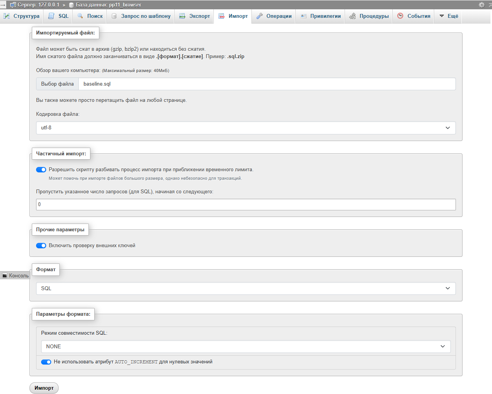
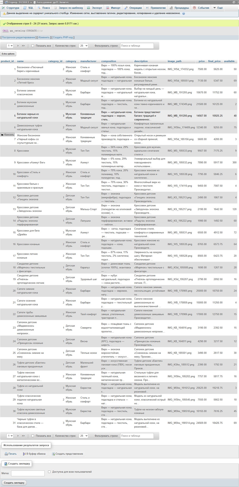
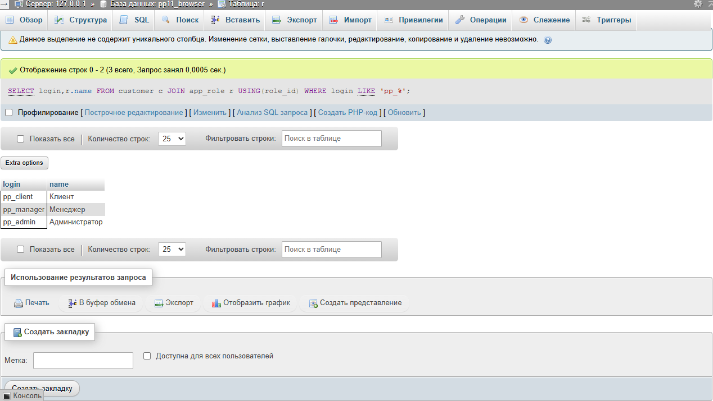
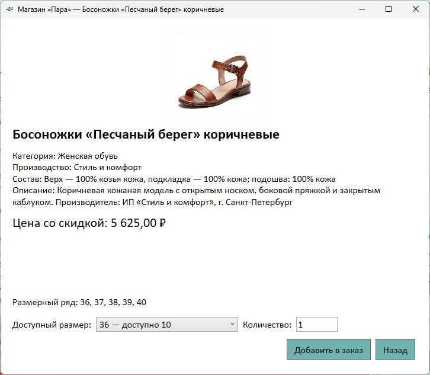
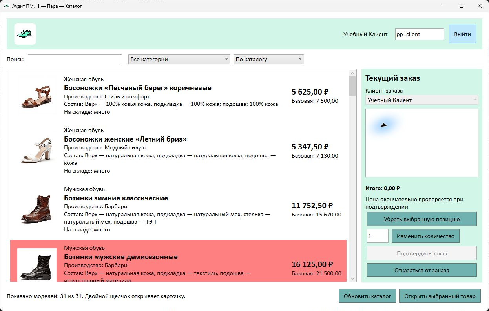
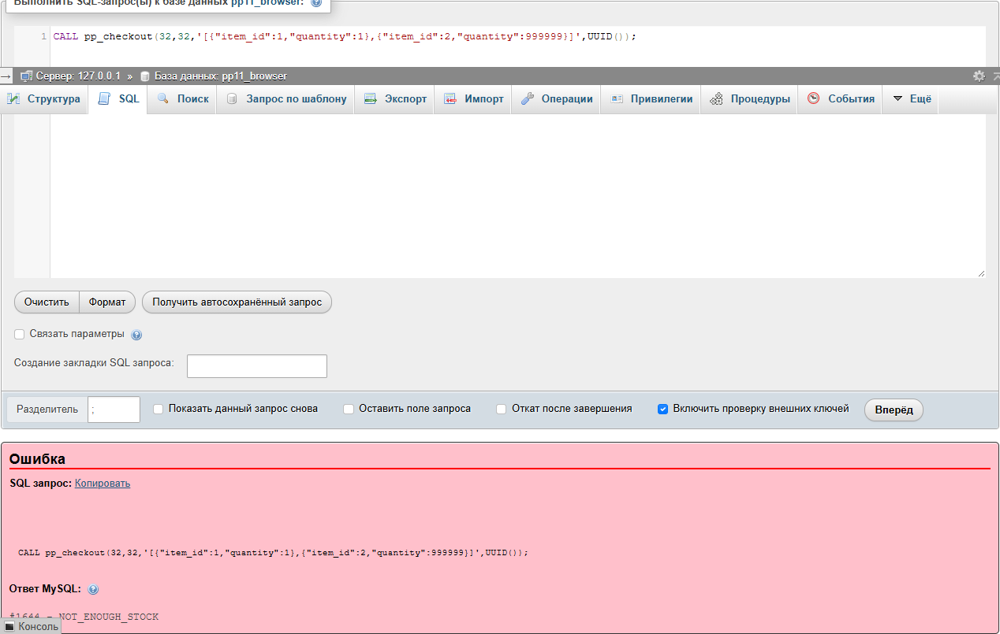
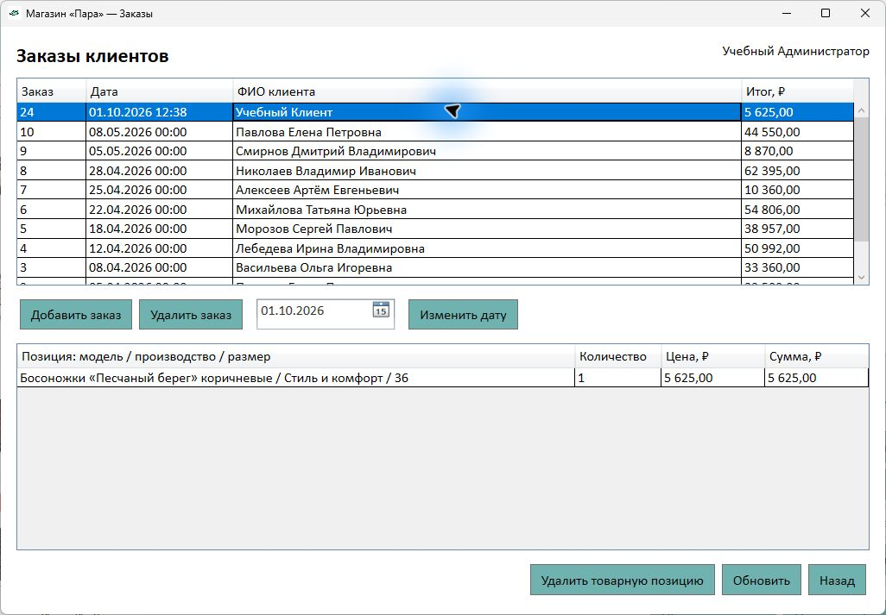

Магазин обуви «Пара»
Приложение на основе БД учебной ПМ.11: каталог, клиентский заказ и управление заказами сотрудниками.
Учебный маршрут / 2026-2027
4 курс · 7 семестр · C# WPF · MySQL в XAMPP
Учебный комплектПриложение на основе БД учебной ПМ.11: каталог, клиентский заказ и управление заказами сотрудниками.
Скачать исходную БД и данные магазина «Пара»
Для демонстрационного разбора: импортируйте baseline.sql в новую пустую БД. Если ваша БД учебной практики готова, используйте её отдельную копию для своего варианта.
Скачать заготовку WPF-приложения и ресурсы магазина
Начните после проверки своей БД: распакуйте и откройте starter/ShopDb.csproj. Это пустое приложение для разработки по методичке.
Скачать SQL доработки БД для приложения и заказов
Используйте после восстановления исходной БД. Изучайте и выполняйте файлы 00–05 по методичке; права выдаются после создания локальных учётных записей.
Скачать демонстрационный проект «Пара» для сверки
Открывайте после самостоятельной реализации и проверки. Это пример демонстрационной области, а не решение своего варианта; локальных паролей в архиве нет.
На области магазина «Пара» создадим приложение с тремя окнами: каталогом и корзиной, карточкой товара, списком заказов. Repository выполняет только параметризованные CALL, SQL-процедуры проверяют роль и изменяют БД. Product и CartLine передают данные между слоями; корзина до подтверждения существует только в памяти приложения.
Интерфейс собирает выбор пользователя, Repository переводит его в запрос, СУБД проверяет существование клиента, остаток и права и сохраняет результат. Затем приложение заново читает данные. Так сообщение «Заказ сохранён» опирается на сохранённый результат, а отмена корзины не требует удаления строк из БД.
Входные данные: клиент, позиции «модель + размер», количества. Сначала проверить ввод; при подтверждении проверить роль и ключ запроса; начать транзакцию; заблокировать позиции по возрастанию идентификатора; проверить остатки; рассчитать и сохранить цены; уменьшить остатки; зафиксировать; перечитать каталог. При ошибке откатить все изменения. Для скидки определить начало текущего месяца, вычесть календарный месяц, искать заказы в полуинтервале [начало прошлого; начало текущего).
Скачать БД и CSV демонстрационного магазина «Пара» — прямая ссылка под заголовком этого раздела — это подготовленные материалы учебной ПМ.11. Скачать заготовку WPF и ресурсы магазина — прямая ссылка под заголовком этого раздела — источник пустого проекта, логотипа, иконки и заглушки. Скачать SQL для доработки исходной БД — прямая ссылка под заголовком этого раздела — код ниже относится к этим файлам. Скачать итоговый пример для последующей сверки — прямая ссылка под заголовком этого раздела — не заменяет построение решения.
Скачать исходную БД и данные магазина «Пара»
Для демонстрационного разбора: импортируйте baseline.sql в новую пустую БД. Если ваша БД учебной практики готова, используйте её отдельную копию для своего варианта.
Откройте XAMPP Control Panel. У уже установленного MySQL нажмите Start, если он остановлен; для phpMyAdmin требуется также Apache. Нажмите Admin возле MySQL. В верхней части phpMyAdmin запишите версию сервера и версию phpMyAdmin в отчёт. Здесь проверена MariaDB 10.4.32 и phpMyAdmin 5.2.1; она входит в установленный XAMPP и принимает приведённый SQL. Не путайте это с отдельным PostgreSQL.
В левой панели выберите собственную БД учебной ПМ.11 → Экспорт → Обычный → SQL. Включите структуру, данные, процедуры и функции; проверьте, что в предварительном списке отмечены только объекты этой БД. Выполните экспорт. Он нужен, чтобы воспроизвести исходное состояние независимо от текущих действий.
Нажмите Создать в левой панели, задайте pp11_demo для демонстрации или pp11_vNN для своего варианта, выберите utf8mb4_bin → Создать. Выделите новую БД → Импорт → Выберите файл. Для демонстрации возьмите materials/demo/baseline.sql из исходного архива; для своего варианта — собственную резервную копию или baseline.sql из архива именно своего варианта. Формат SQL, кодировка utf-8 → Импорт. Архив не содержит команды USE: выбранная БД определяет место восстановления.
Откройте SQL у выбранной БД. Выполните SELECT COUNT(*) FROM product; аналогично size, stock_item, customer, sales_order, order_line. Затем SELECT SUM(available) FROM stock_item; SELECT SUM(total) FROM order_totals;. У «Пара» ожидаются 31, 35, 92, 20, 10, 30; 1274 и 341770.00 соответственно. Несовпадение сначала выясните по исходным данным, не компенсируйте удалением случайных строк. Исходный импорт повторно в заполненной БД не запускайте.

Скачать SQL доработки БД для приложения и заказов
Используйте после восстановления исходной БД. Изучайте и выполняйте файлы 00–05 по методичке; права выдаются после создания локальных учётных записей.
Из архива SQL распакуйте папку database. В Visual Studio можно открыть SQL через Файл → Открыть → Файл для чтения; выполнение производится в phpMyAdmin. Выделите рабочую БД в левой панели, откройте вкладку SQL. Вставляйте полный законченный файл с DELIMITER и нажимайте Вперёд. После успешного выполнения проверьте вкладку Процедуры: функция или процедура должна появиться.
Ниже каждый файл объясняется логическими частями. Создайте файл с указанным именем, вставьте первый фрагмент, затем допишите следующие в конец, включая закрывающие строки. Части тела BEGIN…END по отдельности не выполняйте: объект готов после последнего фрагмента своего файла. ALTER TABLE и CREATE изменяют структуру сразу; ROLLBACK не отменяет DDL. Доработки выполняются только в учебной копии.
Задайте ожидаемый результат до запроса. Если цена отличается, проверьте календарные границы и реальные заказы именно модели; если операция отказала, проверьте роль, количество и текущий размерный остаток. После изменения повторите исходный случай и соседние случаи: это подтверждает и исправление, и сохранность остальных функций.
Скачать SQL доработки БД для приложения и заказов
Используйте после восстановления исходной БД. Изучайте и выполняйте файлы 00–05 по методичке; права выдаются после создания локальных учётных записей.
Создайте или замените файл с начала: database/00_training_users.sql. Фрагмент 1 из 1 этого файла. Исходные варианты содержат только клиентов. Добавляем три явно учебных логина, чтобы сравнить клиентскую, менеджерскую и административную функции. INSERT…SELECT получает role_id по имени; NOT EXISTS сохраняет уже существующую запись. Это пользователи приложения, не учётные записи сервера.
-- === Дополнительные учебные пользователи для проверки всех ролей
INSERT INTO app_role(name) VALUES('Клиент'),('Менеджер'),('Администратор')
ON DUPLICATE KEY UPDATE name=VALUES(name);
INSERT INTO customer(login,last_name,first_name,patronymic,role_id)
SELECT 'pp_client','Учебный','Клиент','',role_id FROM app_role
WHERE name='Клиент' AND NOT EXISTS(SELECT 1 FROM customer WHERE login='pp_client');
INSERT INTO customer(login,last_name,first_name,patronymic,role_id)
SELECT 'pp_manager','Учебный','Менеджер','',role_id FROM app_role
WHERE name='Менеджер' AND NOT EXISTS(SELECT 1 FROM customer WHERE login='pp_manager');
INSERT INTO customer(login,last_name,first_name,patronymic,role_id)
SELECT 'pp_admin','Учебный','Администратор','',role_id FROM app_role
WHERE name='Администратор' AND NOT EXISTS(SELECT 1 FROM customer WHERE login='pp_admin');После выполнения SELECT login FROM customer WHERE login LIKE 'pp_%'; должен показать pp_client, pp_manager, pp_admin. Исходные 20 пользователей демонстрации сохраняются; всего теперь 23. В индивидуальном исходном наборе 2 клиента; после добавления всего 5.
Скачать SQL доработки БД для приложения и заказов
Используйте после восстановления исходной БД. Изучайте и выполняйте файлы 00–05 по методичке; права выдаются после создания локальных учётных записей.
Создайте или замените файл с начала: database/01_price.sql. Фрагмент 1 из 3 этого файла. request_key хранит идентификатор подтверждения, created_by — его автора. UNIQUE запрещает два заголовка с одним ключом. Новые поля nullable, поэтому исходные заказы не изменяют цену и не требуют фиктивных ключей.
-- === Миграция без изменения исторических цен ALTER TABLE sales_order ADD COLUMN IF NOT EXISTS request_key CHAR(36) NULL; ALTER TABLE sales_order ADD COLUMN IF NOT EXISTS created_by BIGINT NULL; CREATE UNIQUE INDEX IF NOT EXISTS ux_order_request ON sales_order(request_key);
После полного файла откройте структуру sales_order; видны новые поля и уникальный индекс. SELECT SUM(total) FROM order_totals; по-прежнему возвращает 341770.00.
Допишите в конец текущего файла: database/01_price.sql. Фрагмент 2 из 3 этого файла. DATE_SUB определяет первое число текущего и предыдущего месяца. EXISTS проверяет историю модели через размерные позиции, а не один размер. Полуинтервал исключает начало текущего месяца. Если заказов нет, цена умножается на 0.75; ROUND возвращает копейки.
-- === Цена относительно календарного месяца DROP FUNCTION IF EXISTS pp_price; DELIMITER $$ CREATE FUNCTION pp_price(p_product BIGINT,p_date DATE) RETURNS DECIMAL(12,2) READS SQL DATA SQL SECURITY DEFINER BEGIN DECLARE v_start DATE; DECLARE v_price DECIMAL(12,2); SET v_start=DATE_SUB(p_date,INTERVAL DAYOFMONTH(p_date)-1 DAY); SELECT p.price * IF(EXISTS( SELECT 1 FROM order_line l JOIN stock_item s USING(item_id) JOIN sales_order o USING(order_id) WHERE s.product_id=p.product_id AND o.ordered_at>=DATE_SUB(v_start,INTERVAL 1 MONTH) AND o.ordered_at<v_start ),1,0.75) INTO v_price FROM product p WHERE p.product_id=p_product; RETURN ROUND(v_price,2); END$$ DELIMITER ;
После последнего фрагмента выполните SELECT product_id,price,pp_price(product_id,CURDATE()) AS final_price FROM product;. При отсутствии заказов в прошлом месяце 101.00 превращается в 75.75. На январской дате проверяйте декабрь предыдущего года.
Допишите в конец текущего файла: database/01_price.sql. Фрагмент 3 из 3 этого файла. customer связан с app_role. USER() определяет фактическую учётную запись соединения: суффикс _client/_manager/_admin должен соответствовать роли пользователя. Поэтому клиентское подключение не сможет выдать себя за менеджера лишь подстановкой actor. root используется только администратором для настройки и SQL-проверки.
-- === Роль пользователя и роль подключения DROP FUNCTION IF EXISTS pp_role; DELIMITER $$ CREATE FUNCTION pp_role(p_actor BIGINT) RETURNS VARCHAR(20) READS SQL DATA SQL SECURITY DEFINER BEGIN DECLARE v_role VARCHAR(20); DECLARE v_account VARCHAR(80); SELECT CASE r.name WHEN 'Администратор' THEN 'admin' WHEN 'Менеджер' THEN 'manager' ELSE 'client' END INTO v_role FROM customer c JOIN app_role r USING(role_id) WHERE c.customer_id=p_actor; SET v_account=SUBSTRING_INDEX(USER(),'@',1); IF v_role IS NULL OR (v_account<>'root' AND (v_account NOT LIKE 'pp11\_%' OR SUBSTRING_INDEX(v_account,'_',-1)<>v_role)) THEN SIGNAL SQLSTATE '45000' SET MESSAGE_TEXT='ROLE_DENIED'; END IF; RETURN v_role; END$$ DELIMITER ;
Полный файл завершён: выполните в SQL. Позднее проверяйте pp_role через процедуры реальными ограниченными подключениями; SET ROLE в root не подтверждает запрет.
Скачать SQL доработки БД для приложения и заказов
Используйте после восстановления исходной БД. Изучайте и выполняйте файлы 00–05 по методичке; права выдаются после создания локальных учётных записей.
Создайте или замените файл с начала: database/02_checkout.sql. Фрагмент 1 из 3 этого файла. pp_checkout получает автора, клиента, JSON позиций и ключ. Курсор обходит объединённые позиции по item_id; единый порядок уменьшает конфликт блокировок. EXIT HANDLER при SQL-ошибке делает ROLLBACK, удаляет временную таблицу и передаёт ошибку вызывающему приложению.
-- === Контракт заказа и обработчик отката DROP PROCEDURE IF EXISTS pp_checkout; DELIMITER $$ CREATE PROCEDURE pp_checkout(IN p_actor BIGINT,IN p_customer BIGINT, IN p_lines LONGTEXT,IN p_key CHAR(36)) SQL SECURITY DEFINER proc: BEGIN DECLARE v_role VARCHAR(20); DECLARE v_order BIGINT; DECLARE v_creator BIGINT; DECLARE v_item BIGINT; DECLARE v_product BIGINT; DECLARE v_quantity INT; DECLARE v_available INT; DECLARE v_price DECIMAL(12,2); DECLARE v_date DATETIME; DECLARE v_index INT DEFAULT 0; DECLARE v_done INT DEFAULT 0; DECLARE v_id_text TEXT; DECLARE v_qty_text TEXT; DECLARE cur CURSOR FOR SELECT item_id,quantity FROM pp_request ORDER BY item_id; DECLARE CONTINUE HANDLER FOR NOT FOUND SET v_done=1; DECLARE EXIT HANDLER FOR SQLEXCEPTION BEGIN ROLLBACK; DROP TEMPORARY TABLE IF EXISTS pp_request; RESIGNAL; END;
Это начало процедуры, пока не выполняйте. Соберите файл до END и DELIMITER. Пример входного JSON: [{"item_id":1,"quantity":1}].
Допишите в конец текущего файла: database/02_checkout.sql. Фрагмент 2 из 3 этого файла. Клиент оформляет только себе; сотрудник выбирает клиента. Уже сохранённый request_key возвращает прежний order_id тому же автору. Проверяются формат ключа, массив и положительные целые значения; повторяющиеся item_id объединяются. Временная таблица принадлежит отдельному соединению.
-- === Роль, повтор запроса и проверка входа
SET v_role=pp_role(p_actor);
IF v_role='client' AND p_customer<>p_actor THEN
SIGNAL SQLSTATE '45000' SET MESSAGE_TEXT='ROLE_DENIED';
END IF;
IF p_key IS NULL OR p_key NOT REGEXP
'^[0-9a-fA-F]{8}-[0-9a-fA-F]{4}-[0-9a-fA-F]{4}-[0-9a-fA-F]{4}-[0-9a-fA-F]{12}$' THEN
SIGNAL SQLSTATE '45000' SET MESSAGE_TEXT='INVALID_REQUEST';
END IF;
SET v_order=(SELECT order_id FROM sales_order WHERE request_key=p_key);
IF v_order IS NOT NULL THEN
SELECT created_by INTO v_creator FROM sales_order WHERE order_id=v_order;
IF v_creator<>p_actor THEN
SIGNAL SQLSTATE '45000' SET MESSAGE_TEXT='ROLE_DENIED';
END IF;
SELECT v_order AS created_order;
LEAVE proc;
END IF;
IF p_lines IS NULL OR JSON_VALID(p_lines)=0 THEN
SIGNAL SQLSTATE '45000' SET MESSAGE_TEXT='INVALID_LINES';
END IF;
IF JSON_TYPE(p_lines)<>'ARRAY' OR JSON_LENGTH(p_lines)=0 THEN
SIGNAL SQLSTATE '45000' SET MESSAGE_TEXT='EMPTY_ORDER';
END IF;
IF NOT EXISTS(SELECT 1 FROM customer WHERE customer_id=p_customer) THEN
SIGNAL SQLSTATE '45000' SET MESSAGE_TEXT='UNKNOWN_CUSTOMER';
END IF;
DROP TEMPORARY TABLE IF EXISTS pp_request;
CREATE TEMPORARY TABLE pp_request(item_id BIGINT PRIMARY KEY,
quantity INT NOT NULL) ENGINE=InnoDB;
WHILE v_index<JSON_LENGTH(p_lines) DO
SET v_id_text=JSON_UNQUOTE(JSON_EXTRACT(p_lines,CONCAT('$[',v_index,'].item_id')));
SET v_qty_text=JSON_UNQUOTE(JSON_EXTRACT(p_lines,CONCAT('$[',v_index,'].quantity')));
IF v_id_text IS NULL OR v_qty_text IS NULL
OR v_id_text NOT REGEXP '^[1-9][0-9]{0,9}$'
OR v_qty_text NOT REGEXP '^[1-9][0-9]{0,5}$' THEN
SIGNAL SQLSTATE '45000' SET MESSAGE_TEXT='INVALID_QUANTITY';
END IF;
INSERT INTO pp_request VALUES(CAST(v_id_text AS UNSIGNED),CAST(v_qty_text AS UNSIGNED))
ON DUPLICATE KEY UPDATE quantity=quantity+VALUES(quantity);
SET v_index=v_index+1;
END WHILE;Продолжите файл. После его завершения проверьте пустой массив, количество 0 и неизвестного клиента: новые заказы и остатки не меняются.
Допишите в конец текущего файла: database/02_checkout.sql. Фрагмент 3 из 3 этого файла. Время фиксируется один раз. Заголовок и строки находятся в одной транзакции; SELECT…FOR UPDATE блокирует конкретные остатки. pp_price вычисляет окончательную цену на дату заказа; unit_price сохраняет её как историю. COMMIT выполняется только после всех позиций. Исходная place_order остаётся для сопоставления учебной практики и не вызывается приложением.
-- === Сохранение цены и остатков одной транзакцией SET v_date=NOW(); START TRANSACTION; INSERT INTO sales_order(customer_id,ordered_at,request_key,created_by) VALUES(p_customer,v_date,p_key,p_actor); SET v_order=LAST_INSERT_ID(); SET v_done=0; OPEN cur; read_loop: LOOP FETCH cur INTO v_item,v_quantity; IF v_done=1 THEN LEAVE read_loop; END IF; SET v_available=NULL; SELECT available,product_id INTO v_available,v_product FROM stock_item WHERE item_id=v_item FOR UPDATE; IF v_available IS NULL THEN SIGNAL SQLSTATE '45000' SET MESSAGE_TEXT='UNKNOWN_ITEM'; END IF; IF v_available<v_quantity THEN SIGNAL SQLSTATE '45000' SET MESSAGE_TEXT='NOT_ENOUGH_STOCK'; END IF; SET v_price=pp_price(v_product,DATE(v_date)); INSERT INTO order_line(order_id,item_id,quantity,unit_price) VALUES(v_order,v_item,v_quantity,v_price); UPDATE stock_item SET available=available-v_quantity WHERE item_id=v_item; END LOOP; CLOSE cur; COMMIT; DROP TEMPORARY TABLE pp_request; SELECT v_order AS created_order; END$$ DELIMITER ;
Файл завершён: выполните в phpMyAdmin. Затем получите customer_id для pp_client; CALL pp_checkout(id,id,'[{"item_id":1,"quantity":1}]',UUID()); возвращает номер. Сверьте строку заказа, уменьшение остатка на 1 и цену; удаление проверяется после следующего файла.
Скачать SQL доработки БД для приложения и заказов
Используйте после восстановления исходной БД. Изучайте и выполняйте файлы 00–05 по методичке; права выдаются после создания локальных учётных записей.
Создайте или замените файл с начала: database/03_manage.sql. Фрагмент 1 из 3 этого файла. Роль должна быть manager или admin. Заголовок блокируется до изменения, строки обходятся в порядке item_id. Возврат количества и удаление заголовка выполняются в одной транзакции, строки удаляются по внешнему ключу CASCADE. Повторное удаление не возвращает товары вторично.
-- === Отмена заказа с возвратом всех позиций
DROP PROCEDURE IF EXISTS pp_delete_order;
DELIMITER $$
CREATE PROCEDURE pp_delete_order(IN p_actor BIGINT,IN p_order BIGINT)
SQL SECURITY DEFINER
BEGIN
DECLARE v_id BIGINT;
DECLARE v_item BIGINT;
DECLARE v_qty INT;
DECLARE v_done INT DEFAULT 0;
DECLARE cur CURSOR FOR SELECT item_id,quantity FROM order_line
WHERE order_id=p_order ORDER BY item_id;
DECLARE CONTINUE HANDLER FOR NOT FOUND SET v_done=1;
DECLARE EXIT HANDLER FOR SQLEXCEPTION BEGIN ROLLBACK; RESIGNAL; END;
IF pp_role(p_actor) NOT IN ('manager','admin') THEN
SIGNAL SQLSTATE '45000' SET MESSAGE_TEXT='ROLE_DENIED';
END IF;
START TRANSACTION;
SET v_id=NULL;
SELECT order_id INTO v_id FROM sales_order WHERE order_id=p_order FOR UPDATE;
IF v_id IS NULL THEN
SIGNAL SQLSTATE '45000' SET MESSAGE_TEXT='ORDER_NOT_FOUND';
END IF;
SET v_done=0;
OPEN cur;
read_loop: LOOP
FETCH cur INTO v_item,v_qty;
IF v_done=1 THEN LEAVE read_loop; END IF;
UPDATE stock_item SET available=available+v_qty WHERE item_id=v_item;
END LOOP;
CLOSE cur;
DELETE FROM sales_order WHERE order_id=p_order;
COMMIT;
END$$
DELIMITER ;После всего файла сохраните число остатков, оформите небольшой заказ и удалите его через pp_delete_order от pp_manager. Остатки возвращаются к исходным; повторный вызов получает ORDER_NOT_FOUND и ничего не меняет.
Допишите в конец текущего файла: database/03_manage.sql. Фрагмент 2 из 3 этого файла. Администратор блокирует заголовок и выбранную строку. Возвращается ровно quantity этой строки. Когда строк больше нет, удаляется пустой заголовок; остальные заказы не затрагиваются.
-- === Удаление строки администратором DROP PROCEDURE IF EXISTS pp_delete_line; DELIMITER $$ CREATE PROCEDURE pp_delete_line(IN p_actor BIGINT,IN p_order BIGINT,IN p_item BIGINT) SQL SECURITY DEFINER BEGIN DECLARE v_id BIGINT; DECLARE v_qty INT; DECLARE EXIT HANDLER FOR SQLEXCEPTION BEGIN ROLLBACK; RESIGNAL; END; IF pp_role(p_actor)<>'admin' THEN SIGNAL SQLSTATE '45000' SET MESSAGE_TEXT='ROLE_DENIED'; END IF; START TRANSACTION; SET v_id=(SELECT order_id FROM sales_order WHERE order_id=p_order FOR UPDATE); SET v_qty=(SELECT quantity FROM order_line WHERE order_id=p_order AND item_id=p_item FOR UPDATE); IF v_id IS NULL OR v_qty IS NULL THEN SIGNAL SQLSTATE '45000' SET MESSAGE_TEXT='LINE_NOT_FOUND'; END IF; UPDATE stock_item SET available=available+v_qty WHERE item_id=p_item; DELETE FROM order_line WHERE order_id=p_order AND item_id=p_item; IF NOT EXISTS(SELECT 1 FROM order_line WHERE order_id=p_order) THEN DELETE FROM sales_order WHERE order_id=p_order; END IF; COMMIT; END$$ DELIMITER ;
После полного файла оформите заказ с двумя позициями, удалите первую pp_delete_line, сравните остатки обеих; удалите вторую и убедитесь, что заголовка больше нет. Клиентское и менеджерское подключения не получают EXECUTE этой процедуры.
Допишите в конец текущего файла: database/03_manage.sql. Фрагмент 3 из 3 этого файла. Администратор меняет ordered_at, но не unit_price. Будущая дата отклоняется. ROW_COUNT может быть 0 и при неизменившейся дате, поэтому существование заказа проверяется отдельно. Изменение истории может повлиять на текущую скидку каталога, но не на сохранённую цену заказа.
-- === Изменение даты без пересчёта исторических цен DROP PROCEDURE IF EXISTS pp_change_date; DELIMITER $$ CREATE PROCEDURE pp_change_date(IN p_actor BIGINT,IN p_order BIGINT,IN p_date DATETIME) SQL SECURITY DEFINER BEGIN IF pp_role(p_actor)<>'admin' THEN SIGNAL SQLSTATE '45000' SET MESSAGE_TEXT='ROLE_DENIED'; END IF; IF p_date IS NULL OR p_date>NOW() THEN SIGNAL SQLSTATE '45000' SET MESSAGE_TEXT='INVALID_DATE'; END IF; UPDATE sales_order SET ordered_at=p_date WHERE order_id=p_order; IF ROW_COUNT()=0 AND NOT EXISTS(SELECT 1 FROM sales_order WHERE order_id=p_order) THEN SIGNAL SQLSTATE '45000' SET MESSAGE_TEXT='ORDER_NOT_FOUND'; END IF; END$$ DELIMITER ;
Файл завершён: выполните целиком. Измените дату созданного тестового заказа и сравните цену строки до/после. Проверяйте отказ на будущую дату и отсутствие побочных изменений.
Скачать SQL доработки БД для приложения и заказов
Используйте после восстановления исходной БД. Изучайте и выполняйте файлы 00–05 по методичке; права выдаются после создания локальных учётных записей.
Создайте или замените файл с начала: database/04_read.sql. Фрагмент 1 из 3 этого файла. LEFT JOIN сохраняет модель даже без размерных позиций; COALESCE возвращает ноль. SUM объединяет остатки всех размеров. GROUP BY включает все неагрегированные поля, поэтому запрос совместим с строгим режимом группировки. Приложение получает базовую и итоговую цену отдельно.
-- === Каталог из БД с единой ценой и остатком DROP PROCEDURE IF EXISTS pp_catalog; DELIMITER $$ CREATE PROCEDURE pp_catalog(IN p_date DATE) SQL SECURITY DEFINER BEGIN SELECT p.product_id,p.name,c.category_id,c.name AS category, m.name AS manufacturer,p.composition,p.description,p.image_path, p.price,pp_price(p.product_id,p_date) AS final_price, COALESCE(SUM(s.available),0) AS available FROM product p JOIN subcategory sc USING(subcategory_id) JOIN category c USING(category_id) JOIN manufacturer m USING(manufacturer_id) LEFT JOIN stock_item s USING(product_id) GROUP BY p.product_id,p.name,c.category_id,c.name,m.name,p.composition, p.description,p.image_path,p.price ORDER BY p.product_id; END$$ DELIMITER ;
После полного файла CALL pp_catalog(CURDATE()); возвращает 31 модель «Пара», суммарные остатки совпадают с stock_item. Изображение находится по image_path, а отсутствие файла обрабатывает модель Product.

Допишите в конец текущего файла: database/04_read.sql. Фрагмент 2 из 3 этого файла. pp_login возвращает только пользователя выбранного логина и роль; пароль приложения в этом учебном сценарии не запрашивается. pp_sizes возвращает размерный ряд с текущими остатками; интерфейс разрешит добавление только положительных остатков.
-- === Вход по логину и размерный ряд
DROP PROCEDURE IF EXISTS pp_login;
DROP PROCEDURE IF EXISTS pp_sizes;
DELIMITER $$
CREATE PROCEDURE pp_login(IN p_login VARCHAR(80)) SQL SECURITY DEFINER
BEGIN
SELECT c.customer_id,CONCAT_WS(' ',c.last_name,c.first_name,
NULLIF(c.patronymic,'')) AS fio,
CASE r.name WHEN 'Администратор' THEN 'admin'
WHEN 'Менеджер' THEN 'manager' ELSE 'client' END AS role_name
FROM customer c JOIN app_role r USING(role_id) WHERE c.login=p_login;
END$$
CREATE PROCEDURE pp_sizes(IN p_product BIGINT) SQL SECURITY DEFINER
BEGIN
SELECT s.item_id,z.label,s.available FROM stock_item s JOIN size z USING(size_id)
WHERE s.product_id=p_product ORDER BY z.size_id;
END$$
DELIMITER ;После полного файла CALL pp_login('pp_client'); и CALL pp_sizes(1); возвращают пользователя и размеры модели. Для неизвестного логина результат пустой.
Допишите в конец текущего файла: database/04_read.sql. Фрагмент 3 из 3 этого файла. pp_customers даёт сотруднику выбор клиента. pp_orders вычисляет суммы из исторических цен, pp_lines раскрывает состав с производителем и размером. Проверка роли находится и в процедуре, и в приложении; прямой доступ к таблицам клиенту не требуется.
-- === Данные для работы сотрудников
DROP PROCEDURE IF EXISTS pp_customers;
DROP PROCEDURE IF EXISTS pp_orders;
DROP PROCEDURE IF EXISTS pp_lines;
DELIMITER $$
CREATE PROCEDURE pp_customers(IN p_actor BIGINT) SQL SECURITY DEFINER
BEGIN
IF pp_role(p_actor) NOT IN ('manager','admin') THEN
SIGNAL SQLSTATE '45000' SET MESSAGE_TEXT='ROLE_DENIED';
END IF;
SELECT customer_id,CONCAT_WS(' ',last_name,first_name,NULLIF(patronymic,'')) AS fio
FROM customer ORDER BY last_name,first_name,customer_id;
END$$
CREATE PROCEDURE pp_orders(IN p_actor BIGINT) SQL SECURITY DEFINER
BEGIN
IF pp_role(p_actor) NOT IN ('manager','admin') THEN
SIGNAL SQLSTATE '45000' SET MESSAGE_TEXT='ROLE_DENIED';
END IF;
SELECT o.order_id,o.ordered_at,
CONCAT_WS(' ',c.last_name,c.first_name,NULLIF(c.patronymic,'')) AS fio,
COALESCE(SUM(l.quantity*l.unit_price),0) AS total
FROM sales_order o JOIN customer c USING(customer_id)
LEFT JOIN order_line l USING(order_id)
GROUP BY o.order_id,o.ordered_at,c.last_name,c.first_name,c.patronymic
ORDER BY o.ordered_at DESC,o.order_id DESC;
END$$
CREATE PROCEDURE pp_lines(IN p_actor BIGINT,IN p_order BIGINT) SQL SECURITY DEFINER
BEGIN
IF pp_role(p_actor) NOT IN ('manager','admin') THEN
SIGNAL SQLSTATE '45000' SET MESSAGE_TEXT='ROLE_DENIED';
END IF;
SELECT l.item_id,CONCAT(p.name,' / ',m.name,' / ',z.label) AS position,
l.quantity,l.unit_price,l.quantity*l.unit_price AS total
FROM order_line l JOIN stock_item s USING(item_id) JOIN product p USING(product_id)
JOIN manufacturer m USING(manufacturer_id) JOIN size z USING(size_id)
WHERE l.order_id=p_order ORDER BY l.item_id;
END$$
DELIMITER ;Файл завершён: выполните. Получите customer_id учебного менеджера и проверьте CALL pp_orders(id);. Каталог и список берутся из одной БД, а не из локального JSON.
Вернитесь на уровень сервера → Учётные записи пользователей → Добавить учётную запись пользователя. Имя pp11_demo_login, хост localhost (Локальный), пароль задайте локально. Не выбирайте создание БД с именем пользователя и не отмечайте глобальные привилегии. Нажмите Вперёд. Аналогично создайте pp11_demo_client, pp11_demo_manager, pp11_demo_admin с собственными паролями. Если имя уже существует, сначала проверьте, кому оно принадлежит; не удаляйте чужую учётную запись.
Пользователь приложения входит по учебному логину. Соединение с MySQL использует отдельную учётную запись и пароль. Разные EXECUTE ограничивают именно возможности подключения: клиенту не разрешена процедура редактирования даты, даже если вызвать её вне окна. Суффиксы имён _client/_manager/_admin дополнительно сопоставляются с ролью actor функцией pp_role.
В этом учебном сценарии вход происходит без пароля приложения. Пользователь, знающий другой учебный логин, может выбрать его; локальный desktop-проект содержит параметры всех учебных подключений. Поэтому этот сценарий показывает работу прав СУБД и проверок роли, но не заменяет серверную аутентификацию реальной торговой системы. Пароли подключений не публикуйте.

Скачать SQL доработки БД для приложения и заказов
Используйте после восстановления исходной БД. Изучайте и выполняйте файлы 00–05 по методичке; права выдаются после создания локальных учётных записей.
Создайте или замените файл с начала: database/05_access.sql. Фрагмент 1 из 1 этого файла. GRANT выдаёт EXECUTE отдельной процедуре, а не все права на БД. login получает только вход/каталог/размеры, клиент — дополнительно подтверждение, менеджер — операции со списком и целым заказом, администратор — ещё строки и дату. Для своего варианта заменяйте pp11_demo и четыре имени пользователей согласованно.
-- === Разрешения для уже созданных локальных учётных записей -- Выполняйте администратором; замените pp11_demo на имя своей учебной копии. -- Пароли задавайте в phpMyAdmin, а не в этом файле или репозитории. GRANT EXECUTE ON PROCEDURE pp11_demo.pp_login TO 'pp11_demo_login'@'localhost'; GRANT EXECUTE ON PROCEDURE pp11_demo.pp_catalog TO 'pp11_demo_login'@'localhost'; GRANT EXECUTE ON PROCEDURE pp11_demo.pp_sizes TO 'pp11_demo_login'@'localhost'; GRANT EXECUTE ON PROCEDURE pp11_demo.pp_catalog TO 'pp11_demo_client'@'localhost'; GRANT EXECUTE ON PROCEDURE pp11_demo.pp_sizes TO 'pp11_demo_client'@'localhost'; GRANT EXECUTE ON PROCEDURE pp11_demo.pp_checkout TO 'pp11_demo_client'@'localhost'; GRANT EXECUTE ON PROCEDURE pp11_demo.pp_catalog TO 'pp11_demo_manager'@'localhost'; GRANT EXECUTE ON PROCEDURE pp11_demo.pp_sizes TO 'pp11_demo_manager'@'localhost'; GRANT EXECUTE ON PROCEDURE pp11_demo.pp_checkout TO 'pp11_demo_manager'@'localhost'; GRANT EXECUTE ON PROCEDURE pp11_demo.pp_customers TO 'pp11_demo_manager'@'localhost'; GRANT EXECUTE ON PROCEDURE pp11_demo.pp_orders TO 'pp11_demo_manager'@'localhost'; GRANT EXECUTE ON PROCEDURE pp11_demo.pp_lines TO 'pp11_demo_manager'@'localhost'; GRANT EXECUTE ON PROCEDURE pp11_demo.pp_delete_order TO 'pp11_demo_manager'@'localhost'; GRANT EXECUTE ON PROCEDURE pp11_demo.pp_catalog TO 'pp11_demo_admin'@'localhost'; GRANT EXECUTE ON PROCEDURE pp11_demo.pp_sizes TO 'pp11_demo_admin'@'localhost'; GRANT EXECUTE ON PROCEDURE pp11_demo.pp_checkout TO 'pp11_demo_admin'@'localhost'; GRANT EXECUTE ON PROCEDURE pp11_demo.pp_customers TO 'pp11_demo_admin'@'localhost'; GRANT EXECUTE ON PROCEDURE pp11_demo.pp_orders TO 'pp11_demo_admin'@'localhost'; GRANT EXECUTE ON PROCEDURE pp11_demo.pp_lines TO 'pp11_demo_admin'@'localhost'; GRANT EXECUTE ON PROCEDURE pp11_demo.pp_delete_order TO 'pp11_demo_admin'@'localhost'; GRANT EXECUTE ON PROCEDURE pp11_demo.pp_delete_line TO 'pp11_demo_admin'@'localhost'; GRANT EXECUTE ON PROCEDURE pp11_demo.pp_change_date TO 'pp11_demo_admin'@'localhost';
После создания четырёх учётных записей и выполнения файла войдите в phpMyAdmin под pp11_demo_client: каталог и pp_checkout разрешены, SELECT FROM customer и UPDATE stock_item запрещены. Под менеджером pp_change_date запрещена.
Скачать заготовку WPF-приложения и ресурсы магазина
Начните после проверки своей БД: распакуйте и откройте starter/ShopDb.csproj. Это пустое приложение для разработки по методичке.
Открыть справочник ссылок на документацию WPF и MySqlConnector
Страница с прямыми ссылками на первичные руководства Microsoft и автора драйвера; используйте при настройке среды и изучении доступа к данным.
Скачать пустой WPF-проект и ресурсы — прямая ссылка под заголовком этого раздела — распакуйте архив в свою рабочую папку. В Visual Studio 2026: Файл → Открыть → Проект или решение → starter/ShopDb.csproj. В Обозревателе решений должны быть App.xaml и MainWindow.xaml. Заготовка уже содержит ресурсы магазина «Пара» и ссылку MySqlConnector 2.5.0.
На стартовом экране выберите Создание проекта. Введите WPF, язык C#, шаблон Приложение WPF, название ShopDb, платформа .NET 10.0. На этой основе пространство имён будет ShopDb. Добавьте папки Assets и Assets/Images через проект → Добавить → Новая папка; из заготовки через Добавить → Существующий элемент добавьте logo.png, shop.ico, picture.png и изображения моделей. Для logo.png и shop.ico в Свойствах задайте Действие при сборке: Ресурс — они загружаются из XAML. Для picture.png и Images задайте Действие при сборке: Нет, Копировать в выходной каталог: Копировать, если новее — они читаются по пути файла. Эти настройки также приведены в csproj.
Правой кнопкой на проекте → Управление пакетами NuGet → Установлено: проверьте MySqlConnector 2.5.0. В проверенной среде он уже доступен. Если в учебной среде пакета нет, подготовьте его с преподавателем до запуска; затем Обзор → MySqlConnector → версия 2.5.0 → Установить. В .csproj PackageReference ниже фиксирует версию.
Сборка → Собрать решение. Затем Ctrl+F5: появляется пустое окно с текстом «Создайте приложение по методичке». Закройте только это окно. Это подтверждает WPF и ресурсы до подключения БД. Файлы bin и obj созданы автоматически и не редактируются.
Откройте справочник ссылок на документацию под заголовком этого раздела. Руководство Microsoft поясняет шаблон WPF и элементы среды; руководство MySqlConnector объясняет Connection, Command и параметры.
Создайте или замените файл с начала: app/ShopDb.csproj. Фрагмент 1 из 1 этого файла. Правой кнопкой на проекте → Изменить файл проекта. TargetFramework задаёт .NET 10 для Windows, UseWPF включает WPF, ApplicationIcon указывает иконку. None Update копирует локальную конфигурацию и ресурсы при сборке. PackageReference подключает установленный драйвер. Сохраните и проверьте сборку пустой заготовки.
<Project Sdk="Microsoft.NET.Sdk">
<PropertyGroup>
<OutputType>WinExe</OutputType>
<TargetFramework>net10.0-windows</TargetFramework>
<UseWPF>true</UseWPF>
<Nullable>enable</Nullable>
<ImplicitUsings>enable</ImplicitUsings>
<ApplicationIcon>Assets\shop.ico</ApplicationIcon>
</PropertyGroup>
<ItemGroup>
<PackageReference Include="MySqlConnector" Version="2.5.0" />
<None Update="settings.local.json" CopyToOutputDirectory="PreserveNewest" />
<None Update="Assets\**\*" CopyToOutputDirectory="PreserveNewest" />
<None Remove="Assets\logo.png;Assets\shop.ico" />
<Resource Include="Assets\logo.png;Assets\shop.ico" />
</ItemGroup>
</Project>Сохраните файл. Сборка после завершения связанного блока должна пройти без ошибок.
Создайте или замените файл с начала: app/App.xaml. Фрагмент 1 из 1 этого файла. В Обозревателе решений откройте App.xaml; замените ресурсы приложения. Window задаёт Calibri, основной белый фон, Button — акцент #70B2AF, DataGrid — режим чтения. StartupUri открывает MainWindow. Дополнительный фон #D2F6E7 используется в окнах. Эти настройки обеспечивают единое оформление окон приложения.
<Application x:Class="ShopDb.App" xmlns="http://schemas.microsoft.com/winfx/2006/xaml/presentation" xmlns:x="http://schemas.microsoft.com/winfx/2006/xaml" StartupUri="MainWindow.xaml"> <Application.Resources> <Style TargetType="Window"> <Setter Property="FontFamily" Value="Calibri" /> <Setter Property="FontSize" Value="16" /> <Setter Property="Language" Value="ru-RU" /> <Setter Property="Background" Value="White" /> </Style> <Style TargetType="Button"> <Setter Property="Background" Value="#70B2AF" /> <Setter Property="Padding" Value="12,7" /> <Setter Property="Margin" Value="4" /> </Style> <Style TargetType="DataGrid"> <Setter Property="AutoGenerateColumns" Value="False" /> <Setter Property="IsReadOnly" Value="True" /> <Setter Property="CanUserAddRows" Value="False" /> <Setter Property="RowHeaderWidth" Value="0" /> </Style> </Application.Resources> </Application>
Сохраните файл. Сборка после завершения связанного блока должна пройти без ошибок.
Создайте или замените файл с начала: app/App.xaml.cs. Фрагмент 1 из 1 этого файла. Откройте App.xaml.cs под App.xaml. Сохраняется стандартный наследник Application, который связывает класс ShopDb.App с XAML. Никакого ручного изменения сгенерированного InitializeComponent здесь не нужно.
using System.Windows;
namespace ShopDb;
public partial class App : Application
{
}Сохраните файл. Сборка после завершения связанного блока должна пройти без ошибок.
Скачать заготовку WPF-приложения и ресурсы магазина
Начните после проверки своей БД: распакуйте и откройте starter/ShopDb.csproj. Это пустое приложение для разработки по методичке.
В Обозревателе решений правой кнопкой по settings.example.json → Копировать, правой кнопкой по проекту → Вставить, переименуйте копию в settings.local.json. Введите реальные локальные пароли четырёх учётных записей СУБД. Для своей БД замените имя pp11_demo в Database и User ID, сохраняя требуемые суффиксы. Company — название вашей организации. settings.example.json оставьте с подсказками без паролей.
Выделите settings.local.json → Свойства → Копировать в выходной каталог: Копировать, если новее. Это также задано в csproj. После сборки откройте папку bin/Debug/net10.0-windows: там должны быть settings.local.json и Assets. Не добавляйте локальную конфигурацию в публичный репозиторий. При ошибке JSON проверьте запятые и двойные кавычки.
Поле image_path исходной БД указывает Images/имя.png. Product берёт имя файла и ищет его только в Assets/Images. Если изображение отсутствует, используется picture.png; оригинальное изображение не рисуйте заново. Файл logo.png из ресурсов показывается с сохранением пропорций, shop.ico задаёт иконку.
Создайте или замените файл с начала: app/settings.example.json. Фрагмент 1 из 1 этого файла. Образец JSON. Заполните именно копию settings.local.json. Company влияет на заголовки окон; четыре подключения соответствуют ключам login/client/manager/admin. Значения ЗАМЕНИТЕ_ЛОКАЛЬНО являются подсказками, а не паролями. После заполнения проверьте копирование файла при сборке.
{
"Company": "Магазин «Пара»",
"Connections": {
"login": "Server=127.0.0.1;Database=pp11_demo;User ID=pp11_demo_login;Password=ЗАМЕНИТЕ_ЛОКАЛЬНО;Connection Timeout=5",
"client": "Server=127.0.0.1;Database=pp11_demo;User ID=pp11_demo_client;Password=ЗАМЕНИТЕ_ЛОКАЛЬНО;Connection Timeout=5",
"manager": "Server=127.0.0.1;Database=pp11_demo;User ID=pp11_demo_manager;Password=ЗАМЕНИТЕ_ЛОКАЛЬНО;Connection Timeout=5",
"admin": "Server=127.0.0.1;Database=pp11_demo;User ID=pp11_demo_admin;Password=ЗАМЕНИТЕ_ЛОКАЛЬНО;Connection Timeout=5"
}
}Сохраните файл. Сборка после завершения связанного блока должна пройти без ошибок.
Создайте или замените файл с начала: app/Models.cs. Фрагмент 1 из 2 этого файла. Settings хранит название компании и подключения по ролям. AppUser представляет именно пользователя торговой системы; IsStaff и IsAdmin вычисляются из его роли. Ключ login означает гостевое подключение и поиск логина, а не роль клиента.
using System.IO;
namespace ShopDb;
// === Настройки и пользователь приложения
public sealed class Settings
{
public string Company { get; set; } = "Магазин «Пара»";
public Dictionary<string, string> Connections { get; set; } = new();
}
public sealed record AppUser(long Id, string Fio, string Role)
{
public bool IsStaff => Role is "manager" or "admin";
public bool IsAdmin => Role == "admin";
}Создайте Models.cs через контекстное меню проекта → Добавить → Класс. Замените автоматически созданный класс указанным фрагментом, затем допишите остальные типы в этот же файл. Сборка после полного Models.cs не требует БД.
Допишите в конец текущего файла: app/Models.cs. Фрагмент 2 из 2 этого файла. Product содержит поля модели, суммарный остаток и две цены. StockLabel и LowStock напрямую выражают границы задания. Picture берёт только имя файла и ищет его в Assets/Images: путь из БД не даёт читать произвольные файлы. SizeItem относится к сочетанию модели и размера, CartLine сохраняет предварительную цену корзины.
// === Модель каталога и товарная позиция
public sealed record Product(long Id, string Name, long CategoryId, string Category,
string Manufacturer, string Composition, string Description, string ImagePath,
decimal Price, decimal FinalPrice, int Available)
{
public string StockLabel => Available > 5 ? "много" : "мало";
public bool LowStock => Available <= 3;
public string Picture
{
get
{
string path = Path.Combine(AppContext.BaseDirectory, "Assets", "Images",
Path.GetFileName(ImagePath));
return File.Exists(path) ? path : Path.Combine(AppContext.BaseDirectory,
"Assets", "picture.png");
}
}
}
public sealed record SizeItem(long ItemId, string Label, int Available)
{
public string Display => $"{Label} — доступно {Available}";
}
public sealed record Choice(long Id, string Name);
public sealed record CartLine(long ItemId, string Position, int Quantity, decimal Price)
{
public decimal Total => Quantity * Price;
}Закончите Models.cs и сохраните. Сборка → Собрать решение. Для отсутствующего image_path должен выбираться Assets/picture.png. Изменение Quantity создаёт новую CartLine, чтобы обновить отображение.
Создайте или замените файл с начала: app/Repository.cs. Фрагмент 1 из 4 этого файла. Создайте Repository.cs через Добавить → Класс. Settings читается из каталога исполняемого приложения. Query открывает новое соединение выбранной роли; await не блокирует ожиданием серверного ответа интерфейс. AddWithValue передаёт значения отдельно от SQL, поэтому введённая кавычка не превращается в часть команды. DataTable превращает результат CALL в таблицу данных.
using System.Data;
using System.IO;
using System.Text.Json;
using MySqlConnector;
namespace ShopDb;
public sealed class Repository
{
// === Локальная конфигурация и параметризованная команда
public Settings Settings { get; }
public AppUser? User { get; private set; }
private string Role => User?.Role ?? "login";
public Repository()
{
string path = Path.Combine(AppContext.BaseDirectory, "settings.local.json");
Settings = JsonSerializer.Deserialize<Settings>(File.ReadAllText(path))
?? throw new InvalidOperationException("Не заполнены настройки подключения.");
foreach (string key in new[] { "login", "client", "manager", "admin" })
{
if (!Settings.Connections.ContainsKey(key))
{
throw new InvalidOperationException($"В настройках отсутствует подключение {key}.");
}
}
}
private async Task<DataTable> Query(string sql, params (string Name, object Value)[] values)
{
await using var connection = new MySqlConnection(Settings.Connections[Role]);
await connection.OpenAsync();
await using var command = new MySqlCommand(sql, connection);
command.CommandTimeout = 15;
foreach (var value in values)
{
command.Parameters.AddWithValue(value.Name, value.Value);
}
await using var reader = await command.ExecuteReaderAsync();
var table = new DataTable();
table.Load(reader);
return table;
}Допишите остальные части класса перед финальной закрывающей скобкой. На этой части класс ещё не завершён. После полного файла сборка подтверждает типы, а подключение проверяется при запуске каталога.
Допишите в конец текущего файла: app/Repository.cs. Фрагмент 2 из 4 этого файла. Login сначала сбрасывает старого пользователя, выполняет pp_login гостевым подключением и проверяет ровно одну строку. Catalog и Sizes преобразуют DataRow в понятные типы модели; цена приходит из SQL, отдельно в C# алгоритм скидки не дублируется.
// === Вход и чтение каталога
public async Task Login(string login)
{
User = null;
DataTable table = await Query("CALL pp_login(@login)", ("@login", login.Trim()));
if (table.Rows.Count != 1)
{
throw new InvalidOperationException("Логин не найден. Проверьте написание по данным своего варианта.");
}
DataRow row = table.Rows[0];
User = new AppUser(Convert.ToInt64(row["customer_id"]),
Convert.ToString(row["fio"])!, Convert.ToString(row["role_name"])!);
}
public void Logout() => User = null;
public async Task<List<Product>> Catalog()
{
DataTable table = await Query("CALL pp_catalog(@date)", ("@date", DateTime.Today));
return table.Rows.Cast<DataRow>().Select(row => new Product(
Convert.ToInt64(row["product_id"]), (string)row["name"],
Convert.ToInt64(row["category_id"]), (string)row["category"],
(string)row["manufacturer"], (string)row["composition"],
(string)row["description"], (string)row["image_path"],
(decimal)row["price"], (decimal)row["final_price"],
Convert.ToInt32(row["available"]))).ToList();
}
public async Task<List<SizeItem>> Sizes(long product)
{
DataTable table = await Query("CALL pp_sizes(@product)", ("@product", product));
return table.Rows.Cast<DataRow>().Select(row => new SizeItem(
Convert.ToInt64(row["item_id"]), (string)row["label"],
Convert.ToInt32(row["available"]))).ToList();
}После полного Repository и подключения окна войдите по pp_client; ввод логина вида pp_client' OR 1=1 -- не должен давать вход. В каталоге сравните количество моделей и цены с CALL pp_catalog(CURDATE()).
Допишите в конец текущего файла: app/Repository.cs. Фрагмент 3 из 4 этого файла. Actor требует входа. Customers для клиента возвращает только самого пользователя, сотруднику вызывает разрешённую процедуру. Checkout сериализует идентификаторы и количества, но не доверяет переданной из UI цене: её вычисляет сервер. Один и тот же requestKey используется при повторе неизвестного сетевого результата.
// === Заказ клиента и выбор клиента сотрудником
private AppUser Actor => User ?? throw new InvalidOperationException("Сначала войдите по логину.");
private void Staff()
{
if (!Actor.IsStaff)
{
throw new InvalidOperationException("Список заказов доступен менеджеру и администратору.");
}
}
public async Task<List<Choice>> Customers()
{
if (!Actor.IsStaff)
{
return new List<Choice> { new(Actor.Id, Actor.Fio) };
}
DataTable table = await Query("CALL pp_customers(@actor)", ("@actor", Actor.Id));
return table.Rows.Cast<DataRow>().Select(row => new Choice(
Convert.ToInt64(row["customer_id"]), (string)row["fio"])).ToList();
}
public async Task<long> Checkout(long customer, IEnumerable<CartLine> lines, string key)
{
string json = JsonSerializer.Serialize(lines.Select(line => new
{
item_id = line.ItemId,
quantity = line.Quantity
}));
DataTable table = await Query("CALL pp_checkout(@actor,@customer,@lines,@key)",
("@actor", Actor.Id), ("@customer", customer), ("@lines", json), ("@key", key));
return Convert.ToInt64(table.Rows[0]["created_order"]);
}После полного решения сравните customer_id сохранённого заказа с выбранным клиентом; у клиента выбор заблокирован, менеджеру доступны учебные пользователи. Не помещайте START TRANSACTION вокруг CALL: процедура сама владеет транзакцией.
Допишите в конец текущего файла: app/Repository.cs. Фрагмент 4 из 4 этого файла. Staff и Admin защищают вход в методы до запроса. SQL-процедура и права фактического подключения проверяют действие повторно. Orders/Lines возвращают таблицы для DataGrid; Delete/ChangeDate не редактируют таблицы напрямую.
// === Управление заказами через ограниченные процедуры
public Task<DataTable> Orders()
{
Staff();
return Query("CALL pp_orders(@actor)", ("@actor", Actor.Id));
}
public Task<DataTable> Lines(long order)
{
Staff();
return Query("CALL pp_lines(@actor,@order)", ("@actor", Actor.Id), ("@order", order));
}
public Task<DataTable> DeleteOrder(long order)
{
Staff();
return Query("CALL pp_delete_order(@actor,@order)", ("@actor", Actor.Id), ("@order", order));
}
private void Admin()
{
if (!Actor.IsAdmin)
{
throw new InvalidOperationException("Это действие доступно только администратору.");
}
}
public Task<DataTable> DeleteLine(long order, long item)
{
Admin();
return Query("CALL pp_delete_line(@actor,@order,@item)",
("@actor", Actor.Id), ("@order", order), ("@item", item));
}
public Task<DataTable> ChangeDate(long order, DateTime date)
{
Admin();
return Query("CALL pp_change_date(@actor,@order,@date)",
("@actor", Actor.Id), ("@order", order), ("@date", date));
}
}Закончите Repository.cs. Сборка должна пройти вместе с Models.cs. На поздней проверке нажатию удалить должна соответствовать одна вызванная процедура; запрет для менеджера должен сохраняться и вне интерфейса.
Создайте или замените файл с начала: app/Ui.cs. Фрагмент 1 из 1 этого файла. Создайте Ui.cs. Run выполняет асинхронное действие и переводит характерные SQL-ошибки в понятные инструкции. Пароль, серверная строка подключения и полный технический текст ошибки не показываются. Confirm использует предупреждение и выбор Да/Нет до удаления.
using System.Windows;
using MySqlConnector;
namespace ShopDb;
public static class Ui
{
// === Понятное сообщение без строки подключения
public static async Task Run(Window owner, Func<Task> action)
{
try
{
await action();
}
catch (MySqlException error)
{
string text = error.Message.Contains("NOT_ENOUGH_STOCK")
? "Остаток изменился. Обновите каталог и уменьшите количество в заказе."
: error.Message.Contains("ROLE_DENIED") || error.Number == 1370
? "Действие запрещено для этой роли. Войдите с разрешённым логином."
: error.Message.Contains("NOT_FOUND")
? "Заказ или строка уже удалены. Обновите список заказов."
: error.Message.Contains("INVALID_DATE")
? "Дата не должна находиться в будущем. Выберите корректную дату."
: error.Number == 1213 || error.Number == 1205
? "Данные сейчас изменяет другой пользователь. Повторите операцию с тем же заказом."
: "Не удалось выполнить операцию с БД. Проверьте запуск MySQL, имя БД и локальные настройки. При неясном результате подтверждения повторите запрос, не изменяя корзину.";
MessageBox.Show(owner, text, "Ошибка операции", MessageBoxButton.OK, MessageBoxImage.Error);
}
catch (Exception error)
{
string text = error is InvalidOperationException or ArgumentException
? error.Message
: "Проверьте settings.local.json и файлы ресурсов, затем повторите запуск.";
MessageBox.Show(owner, text, "Ошибка данных", MessageBoxButton.OK, MessageBoxImage.Error);
}
}
public static bool Confirm(Window owner, string text) => MessageBox.Show(owner, text,
"Подтверждение удаления", MessageBoxButton.YesNo, MessageBoxImage.Warning) == MessageBoxResult.Yes;
}После полного Ui.cs выполните сборку. В итоговом приложении ошибка количества и ошибка БД имеют разные заголовки/пиктограммы и объясняют действие пользователя.
Создайте или замените файл с начала: app/ProductWindow.xaml. Фрагмент 1 из 1 этого файла. Добавьте окно WPF ProductWindow через проект → Добавить → Новый элемент → Окно (WPF). В XAML задайте имена ProductImage, NameText, DetailsText, PriceText, SizesText, SizeBox, QuantityBox и AddButton. Размерный список заполняется из БД; значение количества сначала 1. ScrollViewer сохраняет читаемость длинного описания. Кнопка Назад закрывает карточку без добавления.
<Window x:Class="ShopDb.ProductWindow"
xmlns="http://schemas.microsoft.com/winfx/2006/xaml/presentation"
xmlns:x="http://schemas.microsoft.com/winfx/2006/xaml"
Style="{StaticResource {x:Type Window}}" Title="Карточка товара" Width="740" Height="640" WindowStartupLocation="CenterOwner" Loaded="LoadedWindow">
<!-- === Данные модели, размеры и количество -->
<DockPanel Margin="20">
<StackPanel DockPanel.Dock="Bottom">
<TextBlock x:Name="SizesText" TextWrapping="Wrap" Margin="0,8" />
<StackPanel Orientation="Horizontal">
<TextBlock Text="Доступный размер:" VerticalAlignment="Center" />
<ComboBox x:Name="SizeBox" DisplayMemberPath="Display" Width="240" Margin="8" />
<TextBlock Text="Количество:" VerticalAlignment="Center" />
<TextBox x:Name="QuantityBox" Text="1" Width="70" Margin="8" VerticalContentAlignment="Center" />
</StackPanel>
<StackPanel Orientation="Horizontal" HorizontalAlignment="Right">
<Button x:Name="AddButton" Content="Добавить в заказ" Click="AddClick" IsEnabled="False" />
<Button x:Name="BackButton" Content="Назад" Click="BackClick" />
</StackPanel>
</StackPanel>
<ScrollViewer VerticalScrollBarVisibility="Auto">
<StackPanel>
<Image x:Name="ProductImage" Width="230" Height="160" Stretch="Uniform" />
<TextBlock x:Name="NameText" FontSize="24" FontWeight="Bold" TextWrapping="Wrap" />
<TextBlock x:Name="DetailsText" TextWrapping="Wrap" Margin="0,12" />
<TextBlock x:Name="PriceText" FontSize="22" />
</StackPanel>
</ScrollViewer>
</DockPanel>
</Window>Заменяйте XAML окна целиком указанными частями по порядку. Обработчики подключены атрибутами Click и Loaded: код будет добавлен следующим. Пока XAML не закрыт и нет обработчиков, сборка ожидаемо не готова.
Создайте или замените файл с начала: app/ProductWindow.xaml.cs. Фрагмент 1 из 2 этого файла. Откройте ProductWindow.xaml.cs через стрелку возле окна в Обозревателе решений. Замените класс и конструктор первым фрагментом. MainWindow передаст свежую Product. Loaded получает размеры повторно, показывает весь ряд и оставляет для покупки только доступные. До загрузки AddButton выключена.
using System.Windows;
using System.Windows.Media.Imaging;
namespace ShopDb;
public partial class ProductWindow : Window
{
// === Актуальные данные карточки
private readonly Repository repository;
private readonly Product product;
public CartLine? Result { get; private set; }
public ProductWindow(Repository repository, Product product)
{
InitializeComponent();
this.repository = repository;
this.product = product;
Title = repository.Settings.Company + " — " + product.Name;
NameText.Text = product.Name;
DetailsText.Text = $"Категория: {product.Category}\nПроизводство: {product.Manufacturer}\nСостав: {product.Composition}\nОписание: {product.Description}";
PriceText.Text = $"Цена со скидкой: {product.FinalPrice:N2} ₽";
ProductImage.Source = new BitmapImage(new Uri(product.Picture));
}
private async void LoadedWindow(object sender, RoutedEventArgs e) => await Ui.Run(this, async () =>
{
List<SizeItem> sizes = await repository.Sizes(product.Id);
SizesText.Text = "Размерный ряд: " + string.Join(", ", sizes.Select(s => s.Label));
SizeBox.ItemsSource = sizes.Where(s => s.Available > 0).ToList();
SizeBox.SelectedIndex = 0;
AddButton.IsEnabled = repository.User is not null && SizeBox.Items.Count > 0;
});Допишите обработчики следующей части. В готовом окне проверяйте логотип/иконку главной формы отдельно, изображение карточки — оригинальным файлом или заглушкой.

Допишите в конец текущего файла: app/ProductWindow.xaml.cs. Фрагмент 2 из 2 этого файла. TryParse отказывает буквам, дроби и отрицательному количеству; сравнение с доступным остатком защищает от очевидно невозможного выбора. Result передаёт позицию вызывающему окну, а DialogResult закрывает карточку. Сама карточка не создаёт заказ в БД.
// === Проверка выбора до изменения корзины
private void AddClick(object sender, RoutedEventArgs e)
{
if (repository.User is null || SizeBox.SelectedItem is not SizeItem size)
{
return;
}
if (!int.TryParse(QuantityBox.Text, out int quantity) || quantity < 1 || quantity > size.Available)
{
MessageBox.Show(this, $"Введите целое количество от 1 до {size.Available}.",
"Ошибка количества", MessageBoxButton.OK, MessageBoxImage.Error);
QuantityBox.Focus();
return;
}
Result = new CartLine(size.ItemId, $"{product.Name} / {size.Label}", quantity, product.FinalPrice);
DialogResult = true;
}
private void BackClick(object sender, RoutedEventArgs e) => DialogResult = false;
}Окно закончено: сборка должна пройти вместе с Models, Repository и Ui. Позднее в карточке введите 0, буквы и количество больше остатка: сообщение появится, строки БД не добавятся. Назад вернёт к каталогу.
Создайте или замените файл с начала: app/OrdersWindow.xaml. Фрагмент 1 из 1 этого файла. Добавьте OrdersWindow как Окно (WPF), замените XAML приведёнными частями. Верхний DataGrid — заголовки, нижний — состав. Binding обращается к именам колонок результата SQL. DatePicker и кнопки изменения изначально выключены. Конструктор включает дату только администратору; удаление строки становится доступным администратору после загрузки состава выбранного заказа. IsReadOnly не позволяет редактировать таблицу произвольным вводом.
<Window x:Class="ShopDb.OrdersWindow"
xmlns="http://schemas.microsoft.com/winfx/2006/xaml/presentation"
xmlns:x="http://schemas.microsoft.com/winfx/2006/xaml"
Style="{StaticResource {x:Type Window}}" Title="Заказы" Width="1040" Height="720" WindowStartupLocation="CenterOwner" Loaded="LoadedWindow">
<!-- === Список заказов и состав выбранного -->
<Grid Margin="18">
<Grid.RowDefinitions><RowDefinition Height="Auto" /><RowDefinition Height="*" /><RowDefinition Height="Auto" /><RowDefinition Height="*" /><RowDefinition Height="Auto" /></Grid.RowDefinitions>
<DockPanel><TextBlock x:Name="UserText" DockPanel.Dock="Right" /><TextBlock Text="Заказы клиентов" FontSize="24" FontWeight="Bold" /></DockPanel>
<DataGrid x:Name="OrderGrid" Grid.Row="1" Margin="0,12" SelectionChanged="OrderChanged">
<DataGrid.Columns>
<DataGridTextColumn Header="Заказ" Binding="{Binding order_id}" Width="80" />
<DataGridTextColumn Header="Дата" Binding="{Binding ordered_at,StringFormat={}{0:dd.MM.yyyy HH:mm}}" Width="170" />
<DataGridTextColumn Header="ФИО клиента" Binding="{Binding fio}" Width="*" />
<DataGridTextColumn Header="Итог, ₽" Binding="{Binding total,StringFormat={}{0:N2}}" Width="130" />
</DataGrid.Columns>
</DataGrid>
<StackPanel Grid.Row="2" Orientation="Horizontal">
<Button x:Name="NewButton" Content="Добавить заказ" Click="NewClick" />
<Button x:Name="DeleteOrderButton" Content="Удалить заказ" Click="DeleteOrderClick" />
<DatePicker x:Name="OrderDate" Width="160" Margin="12,4" IsEnabled="False" />
<Button x:Name="ChangeDateButton" Content="Изменить дату" Click="ChangeDateClick" IsEnabled="False" />
</StackPanel>
<DataGrid x:Name="LineGrid" Grid.Row="3" Margin="0,12">
<DataGrid.Columns>
<DataGridTextColumn Header="Позиция: модель / производство / размер" Binding="{Binding position}" Width="*" />
<DataGridTextColumn Header="Количество" Binding="{Binding quantity}" Width="100" />
<DataGridTextColumn Header="Цена, ₽" Binding="{Binding unit_price,StringFormat={}{0:N2}}" Width="120" />
<DataGridTextColumn Header="Сумма, ₽" Binding="{Binding total,StringFormat={}{0:N2}}" Width="120" />
</DataGrid.Columns>
</DataGrid>
<StackPanel Grid.Row="4" Orientation="Horizontal" HorizontalAlignment="Right">
<Button x:Name="DeleteLineButton" Content="Удалить товарную позицию" Click="DeleteLineClick" IsEnabled="False" />
<Button x:Name="RefreshButton" Content="Обновить" Click="RefreshClick" />
<Button x:Name="BackButton" Content="Назад" Click="BackClick" />
</StackPanel>
</Grid>
</Window>Добавьте связанный код следующим. Сетка по звёздным строкам распределяет свободное место; Width=* у ФИО и позиции позволяет помещать длинные названия. Окончательная проверка выполняется под двумя ролями.
Создайте или замените файл с начала: app/OrdersWindow.xaml.cs. Фрагмент 1 из 2 этого файла. Замените код OrdersWindow.xaml.cs. ClearLines сразу снимает выбор нижней строки, очищает таблицу, выключает удаление и увеличивает loadVersion. Reload вызывает её до ожидания списка. OrderChanged запоминает версию запроса и номер заказа; после await принимает ответ только при совпадении обоих. Это защищает и возврат к прежнему заказу, пока первый запрос ещё выполняется. loadedOrder хранит номер заказа, чей состав уже загружен; кнопка удаления включается только после загрузки и только администратору. При снятии выбора состав очищается, дата сбрасывается. Номер извлекается из выбранной строки. В начале окна кнопка удаления выключена даже администратору: строки ещё не загружены.
using System.Data;
using System.Windows;
using System.Windows.Controls;
namespace ShopDb;
public partial class OrdersWindow : Window
{
// === Доступ сотрудника и загрузка списка
private readonly Repository repository;
private bool busy;
private long? loadedOrder;
private int loadVersion;
public OrdersWindow(Repository repository)
{
InitializeComponent();
this.repository = repository;
Title = repository.Settings.Company + " — Заказы";
UserText.Text = repository.User?.Fio;
ChangeDateButton.IsEnabled = repository.User?.IsAdmin == true;
DeleteLineButton.IsEnabled = false;
OrderDate.IsEnabled = repository.User?.IsAdmin == true;
}
private async void LoadedWindow(object sender, RoutedEventArgs e) => await Ui.Run(this, Reload);
private long SelectedOrder => OrderGrid.SelectedItem is DataRowView row
? Convert.ToInt64(row["order_id"])
: throw new InvalidOperationException("Выберите заказ в верхней таблице.");
private async Task Reload()
{
ClearLines();
OrderGrid.ItemsSource = (await repository.Orders()).DefaultView;
}
private void ClearLines()
{
loadVersion++;
loadedOrder = null;
LineGrid.SelectedItem = null;
LineGrid.ItemsSource = null;
DeleteLineButton.IsEnabled = false;
}
private async void OrderChanged(object sender, SelectionChangedEventArgs e) => await Ui.Run(this, async () =>
{
ClearLines();
int version = loadVersion;
if (OrderGrid.SelectedItem is DataRowView row)
{
long id = Convert.ToInt64(row["order_id"]);
OrderDate.SelectedDate = Convert.ToDateTime(row["ordered_at"]);
DataTable lines = await repository.Lines(id);
if (version == loadVersion && OrderGrid.SelectedItem is DataRowView current && Convert.ToInt64(current["order_id"]) == id)
{
LineGrid.ItemsSource = lines.DefaultView;
loadedOrder = id;
DeleteLineButton.IsEnabled = repository.User?.IsAdmin == true;
}
}
else
{
OrderDate.SelectedDate = null;
}
});Допишите вторую часть класса. В готовом приложении быстро переключайте заказы, в том числе A → B → A: до ответа нижняя таблица пуста и удаление выключено, после ответа состав соответствует верхнему выбору. При снятии выбора состав тоже пуст. Повторите проверку при задержке БД в отдельной тестовой копии; старый ответ не должен включать удаление.
Допишите в конец текущего файла: app/OrdersWindow.xaml.cs. Фрагмент 2 из 2 этого файла. Mutate блокирует повторное нажатие на период изменения и возвращает управление в finally. DeleteLineClick проверяет loadedOrder == SelectedOrder до чтения item_id: номер заказа и товар должны принадлежать одному загруженному составу. DeleteOrder и DeleteLine предупреждают о последствиях. После CALL перечитывается список; NewClick возвращает к каталогу для выбора модели и клиента. Изменение даты сохраняет выбранный календарный день с временем 00:00.
// === Подтверждение необратимых действий и обновление
private async Task Mutate(Func<Task> action)
{
if (busy)
{
return;
}
busy = true;
IsEnabled = false;
try
{
await Ui.Run(this, action);
}
finally
{
IsEnabled = true;
busy = false;
}
}
private async void DeleteOrderClick(object sender, RoutedEventArgs e) => await Mutate(async () =>
{
long id = SelectedOrder;
if (Ui.Confirm(this, $"Удалить заказ №{id}? Товары вернутся в остаток, запись заказа будет удалена."))
{
await repository.DeleteOrder(id);
await Reload();
}
});
private async void DeleteLineClick(object sender, RoutedEventArgs e) => await Mutate(async () =>
{
long order = SelectedOrder;
if (loadedOrder != order)
{
throw new InvalidOperationException("Дождитесь загрузки состава выбранного заказа.");
}
if (LineGrid.SelectedItem is not DataRowView row)
{
throw new InvalidOperationException("Выберите товарную позицию в нижней таблице.");
}
long item = Convert.ToInt64(row["item_id"]);
if (Ui.Confirm(this, "Удалить выбранную позицию и вернуть её количество в остаток? Если она последняя, заказ будет удалён."))
{
await repository.DeleteLine(order, item);
await Reload();
}
});
private async void ChangeDateClick(object sender, RoutedEventArgs e) => await Mutate(async () =>
{
long order = SelectedOrder;
DateTime date = OrderDate.SelectedDate ?? throw new InvalidOperationException("Выберите дату заказа.");
await repository.ChangeDate(order, date);
await Reload();
});
private async void RefreshClick(object sender, RoutedEventArgs e) => await Ui.Run(this, Reload);
private void NewClick(object sender, RoutedEventArgs e) => DialogResult = true;
private void BackClick(object sender, RoutedEventArgs e) => DialogResult = false;
}Окно закончено, выполните сборку. Для проверки нужны созданные в демонстрации заказы: отказ в предупреждении ничего не меняет; подтверждение возвращает остаток. После удаления последней позиции пустой заказ исчезает.
Создайте или замените файл с начала: app/MainWindow.xaml. Фрагмент 1 из 4 этого файла. Откройте MainWindow.xaml в заготовке. Замените весь исходный XAML частями ниже. Grid выделяет отдельные строки, DockPanel располагает логотип, ФИО и кнопки. Image использует Stretch=Uniform и сохраняет пропорции ресурса. LoginBox и LoginButton вводят логин; LogoutButton и OrdersButton изначально скрыты.
<Window x:Class="ShopDb.MainWindow"
xmlns="http://schemas.microsoft.com/winfx/2006/xaml/presentation"
xmlns:x="http://schemas.microsoft.com/winfx/2006/xaml"
Style="{StaticResource {x:Type Window}}" Title="Магазин «Пара» — Каталог" Width="1260" Height="800"
MinWidth="1050" MinHeight="650" Icon="Assets/shop.ico" Loaded="LoadedWindow">
<!-- === Верхняя панель входа -->
<Grid Margin="16">
<Grid.RowDefinitions>
<RowDefinition Height="Auto" />
<RowDefinition Height="Auto" />
<RowDefinition Height="*" />
<RowDefinition Height="Auto" />
</Grid.RowDefinitions>
<Border Background="#D2F6E7" Padding="12">
<DockPanel>
<Image Source="Assets/logo.png" Width="70" Height="55" Stretch="Uniform" DockPanel.Dock="Left" />
<StackPanel DockPanel.Dock="Right" Orientation="Horizontal">
<TextBox x:Name="LoginBox" Width="125" Height="30" Margin="8" VerticalContentAlignment="Center" />
<Button x:Name="LoginButton" Content="Войти" Click="LoginClick" />
<Button x:Name="LogoutButton" Content="Выйти" Click="LogoutClick" Visibility="Collapsed" />
<Button x:Name="OrdersButton" Content="Заказы" Click="OrdersClick" Visibility="Collapsed" />
</StackPanel>
<TextBlock x:Name="UserText" Text="Гость" TextAlignment="Right" VerticalAlignment="Center" Margin="12" />
</DockPanel>
</Border>Продолжайте XAML до закрывающего Window; связанные обработчики будут добавлены после полной разметки. Не изменяйте автоматически создаваемые файлы obj и код дизайнера.
Допишите в конец текущего файла: app/MainWindow.xaml. Фрагмент 2 из 4 этого файла. Имена SearchBox, CategoryBox, SortBox связывают элементы с кодом. TextChanged и SelectionChanged вызывают одну ApplyFilter; отдельной кнопки поиска нет. FilterPanel выключена для гостя. В ComboBox категорий код добавит Все категории первым элементом.
<!-- === Совместные поиск, фильтр и сортировка -->
<StackPanel x:Name="FilterPanel" Grid.Row="1" Orientation="Horizontal" Margin="0,12" IsEnabled="False">
<TextBlock Text="Поиск:" VerticalAlignment="Center" />
<TextBox x:Name="SearchBox" Width="240" Margin="8,0" TextChanged="FilterChanged" />
<ComboBox x:Name="CategoryBox" Width="260" DisplayMemberPath="Name" SelectionChanged="SelectionChanged" Margin="8,0" />
<ComboBox x:Name="SortBox" Width="180" SelectionChanged="SelectionChanged" SelectedIndex="0">
<ComboBoxItem Content="По каталогу" />
<ComboBoxItem Content="Цена ↑" />
<ComboBoxItem Content="Цена ↓" />
</ComboBox>
</StackPanel>
<Grid Grid.Row="2">
<Grid.ColumnDefinitions><ColumnDefinition Width="*" /><ColumnDefinition Width="320" /></Grid.ColumnDefinitions>Фрагмент продолжается внутри Grid. После полного окна проверяйте три условия одновременно: фильтр не сбрасывает поиск, поиск не сбрасывает сортировку, Все категории снимает только категорию.
Допишите в конец текущего файла: app/MainWindow.xaml. Фрагмент 3 из 4 этого файла. DataTemplate описывает карточку каждой Product. Binding обращается к её свойствам; триггер LowStock даёт #ff8080 при общем остатке ≤3. Цена и исходная цена различаются подписями. Двойной щелчок по элементу открывает его карточку; нижняя кнопка предоставляет то же действие.
<!-- === Карточка модели из базы -->
<ListBox x:Name="CatalogList" MouseDoubleClick="ProductClick" ScrollViewer.HorizontalScrollBarVisibility="Disabled" HorizontalContentAlignment="Stretch">
<ListBox.ItemTemplate>
<DataTemplate>
<Border Padding="10" Margin="2">
<Border.Style>
<Style TargetType="Border">
<Setter Property="Background" Value="White" />
<Style.Triggers><DataTrigger Binding="{Binding LowStock}" Value="True"><Setter Property="Background" Value="#ff8080" /></DataTrigger></Style.Triggers>
</Style>
</Border.Style>
<Grid>
<Grid.ColumnDefinitions><ColumnDefinition Width="115" /><ColumnDefinition Width="*" /><ColumnDefinition Width="130" /></Grid.ColumnDefinitions>
<Image Source="{Binding Picture}" Width="105" Height="100" Stretch="Uniform" />
<StackPanel Grid.Column="1" Margin="12,0">
<TextBlock Text="{Binding Category}" />
<TextBlock Text="{Binding Name}" FontSize="20" FontWeight="Bold" TextWrapping="Wrap" />
<TextBlock Text="{Binding Manufacturer,StringFormat=Производство: {0}}" />
<TextBlock Text="{Binding Composition,StringFormat=Состав: {0}}" TextWrapping="Wrap" />
<TextBlock Text="{Binding StockLabel,StringFormat=На складе: {0}}" />
</StackPanel>
<StackPanel Grid.Column="2" VerticalAlignment="Center">
<TextBlock Text="{Binding FinalPrice,StringFormat={}{0:N2} ₽}" FontSize="22" FontWeight="Bold" />
<TextBlock Text="{Binding Price,StringFormat=Базовая: {0:N2}}" />
</StackPanel>
</Grid>
</Border>
</DataTemplate>
</ListBox.ItemTemplate>
</ListBox>Сохраните следующую часть в том же XAML. После заполнения окна проверяйте границы 3/4 и 5/6 на контролируемом наборе, а не только цвет первого товара.
Допишите в конец текущего файла: app/MainWindow.xaml. Фрагмент 4 из 4 этого файла. CartList привязан к ObservableCollection. CustomerBox показывает владельца заказа; для клиента он заблокирован. CartQuantity меняет выбранную позицию через кнопку. Подтверждение отдельно от добавления; сумма названа предварительной, потому что окончательные цена и остаток проверяются на сервере.
<!-- === Корзина до подтверждения хранится в памяти -->
<Border Grid.Column="1" Background="#D2F6E7" Padding="10" Margin="12,0,0,0">
<DockPanel>
<StackPanel DockPanel.Dock="Top">
<TextBlock Text="Текущий заказ" FontSize="22" FontWeight="Bold" />
<TextBlock Text="Клиент заказа" Margin="0,8,0,2" />
<ComboBox x:Name="CustomerBox" DisplayMemberPath="Name" />
</StackPanel>
<StackPanel DockPanel.Dock="Bottom">
<TextBlock x:Name="CartTotal" Text="Итого: 0,00 ₽" Margin="0,8" FontWeight="Bold" />
<TextBlock Text="Цена окончательно проверяется при подтверждении." TextWrapping="Wrap" />
<Button x:Name="RemoveCartButton" Content="Убрать выбранную позицию" Click="RemoveCartClick" />
<StackPanel Orientation="Horizontal"><TextBox x:Name="CartQuantity" Text="1" Width="55" Margin="4" VerticalContentAlignment="Center" /><Button x:Name="ChangeCartButton" Content="Изменить количество" Click="ChangeCartClick" /></StackPanel>
<Button x:Name="CheckoutButton" Content="Подтвердить заказ" Click="CheckoutClick" IsEnabled="False" />
<Button x:Name="CancelCartButton" Content="Отказаться от заказа" Click="CancelCartClick" />
</StackPanel>
<ListBox x:Name="CartList" Margin="0,10" ScrollViewer.HorizontalScrollBarVisibility="Disabled">
<ListBox.ItemTemplate><DataTemplate><StackPanel Width="260"><TextBlock Text="{Binding Position}" TextWrapping="Wrap" /><TextBlock Text="{Binding Quantity,StringFormat=Количество: {0}}" /><TextBlock Text="{Binding Total,StringFormat={}{0:N2} ₽}" /></StackPanel></DataTemplate></ListBox.ItemTemplate>
</ListBox>
</DockPanel>
</Border>
</Grid>
<DockPanel Grid.Row="3" Margin="0,12,0,0">
<Button x:Name="OpenProductButton" Content="Открыть выбранный товар" Click="OpenProductClick" DockPanel.Dock="Right" />
<Button x:Name="RefreshButton" Content="Обновить каталог" Click="RefreshClick" DockPanel.Dock="Right" />
<TextBlock x:Name="StatusText" Text="Загрузка каталога…" VerticalAlignment="Center" TextWrapping="Wrap" />
</DockPanel>
</Grid>
</Window>Закончите MainWindow.xaml и сохраните. Вводить код обработчиков будем в MainWindow.xaml.cs. Пока их нет, ошибки имён Click ожидаемы; следующий завершённый блок устраняет их.
Создайте или замените файл с начала: app/MainWindow.xaml.cs. Фрагмент 1 из 5 этого файла. Замените MainWindow.xaml.cs, начиная с импортов и объявления класса. InitializeComponent создаёт элементы XAML; LoadedWindow читает конфигурацию и каталог. RefreshCatalog сохраняет выбранную категорию и заново строит список; её идентификатор хранится отдельно от подписи.
using System.Collections.ObjectModel;
using System.Windows;
using System.Windows.Controls;
using System.Windows.Input;
using MySqlConnector;
namespace ShopDb;
public partial class MainWindow : Window
{
// === Состояние окна и первоначальная загрузка
private Repository? repository;
private List<Product> products = new();
private readonly ObservableCollection<CartLine> cart = new();
private string requestKey = Guid.NewGuid().ToString();
private bool pending;
private bool busy;
public MainWindow()
{
InitializeComponent();
CartList.ItemsSource = cart;
}
private async void LoadedWindow(object sender, RoutedEventArgs e) => await Ui.Run(this, async () =>
{
repository = new Repository();
Title = repository.Settings.Company + " — Каталог";
await RefreshCatalog();
});
private Repository Repo => repository ?? throw new InvalidOperationException("Проверьте настройки и перезапустите приложение.");
private async Task RefreshCatalog()
{
products = await Repo.Catalog();
long selected = (CategoryBox.SelectedItem as Choice)?.Id ?? 0;
CategoryBox.ItemsSource = new[] { new Choice(0, "Все категории") }
.Concat(products.Select(p => new Choice(p.CategoryId, p.Category)).Distinct()).ToList();
CategoryBox.SelectedItem = ((List<Choice>)CategoryBox.ItemsSource)
.FirstOrDefault(c => c.Id == selected) ?? ((List<Choice>)CategoryBox.ItemsSource)[0];
ApplyFilter();
}Добавьте остальные части внутри того же класса по порядку. Заготовка и итоговый проект используют одинаковое пространство имён ShopDb. Пока все обработчики не добавлены, окончательная сборка ещё не готова.
Допишите в конец текущего файла: app/MainWindow.xaml.cs. Фрагмент 2 из 5 этого файла. ApplyFilter сначала объединяет категорию и поиск, затем применяет выбранную сортировку с устойчивым порядком по Id для равных цен. Contains сравнивает без учёта регистра. Гость получает полный исходный список. Проверка null защищает события ComboBox во время InitializeComponent.
// === Фильтрация и сортировка одной выборки
private void ApplyFilter()
{
if (CatalogList is null || CategoryBox is null || SortBox is null || SearchBox is null)
{
return;
}
IEnumerable<Product> view = products;
if (repository?.User is not null)
{
string search = SearchBox.Text.Trim();
long category = (CategoryBox.SelectedItem as Choice)?.Id ?? 0;
view = view.Where(p => (category == 0 || p.CategoryId == category)
&& (p.Name.Contains(search, StringComparison.OrdinalIgnoreCase)
|| p.Description.Contains(search, StringComparison.OrdinalIgnoreCase)));
view = SortBox.SelectedIndex switch
{
1 => view.OrderBy(p => p.FinalPrice).ThenBy(p => p.Id),
2 => view.OrderByDescending(p => p.FinalPrice).ThenBy(p => p.Id),
_ => view.OrderBy(p => p.Id)
};
}
List<Product> result = view.ToList();
CatalogList.ItemsSource = result;
StatusText.Text = $"Показано моделей: {result.Count} из {products.Count}. Двойной щелчок открывает карточку.";
}
private void FilterChanged(object sender, TextChangedEventArgs e) => ApplyFilter();
private void SelectionChanged(object sender, SelectionChangedEventArgs e) => ApplyFilter();Продолжите класс. После полного решения вводите часть описания и выбирайте категорию: результат сравнивайте с Product.Description и CategoryId, а не только названием.
Допишите в конец текущего файла: app/MainWindow.xaml.cs. Фрагмент 3 из 5 этого файла. LoginClick сбрасывает корзину при успешном входе, обновляет доступность интерфейса и список клиентов. UpdateUser показывает ФИО и кнопки по роли. Logout очищает пользовательское состояние и возвращает гостевой каталог. Нельзя сменить пользователя во время неясного подтверждения заказа.
// === Смена пользователя и доступных действий
private async void LoginClick(object sender, RoutedEventArgs e) => await Ui.Run(this, async () =>
{
if (busy || pending)
{
throw new InvalidOperationException("Завершите подтверждение текущего заказа перед сменой пользователя.");
}
await Repo.Login(LoginBox.Text);
ClearCart();
UpdateUser();
await LoadCustomers();
await RefreshCatalog();
});
private void UpdateUser()
{
UserText.Text = Repo.User?.Fio ?? "Гость";
FilterPanel.IsEnabled = Repo.User is not null;
LoginButton.Visibility = Repo.User is null ? Visibility.Visible : Visibility.Collapsed;
LogoutButton.Visibility = Repo.User is null ? Visibility.Collapsed : Visibility.Visible;
OrdersButton.Visibility = Repo.User?.IsStaff == true ? Visibility.Visible : Visibility.Collapsed;
CustomerBox.IsEnabled = Repo.User?.IsStaff == true;
UpdateCart();
}
private async Task LoadCustomers()
{
CustomerBox.ItemsSource = await Repo.Customers();
CustomerBox.SelectedItem = ((List<Choice>)CustomerBox.ItemsSource)
.FirstOrDefault(c => c.Id == Repo.User!.Id);
}
private void LogoutClick(object sender, RoutedEventArgs e)
{
if (busy || pending)
{
MessageBox.Show(this, "Сначала повторите подтверждение текущего заказа.", "Информация", MessageBoxButton.OK, MessageBoxImage.Information);
return;
}
Repo.Logout();
ClearCart();
CustomerBox.ItemsSource = null;
UpdateUser();
ApplyFilter();
}После завершения файла сравните гостя, pp_client, pp_manager, pp_admin; клиент не видит Заказы, сотрудники видят. Выход убирает корзину и выбор клиента.
Допишите в конец текущего файла: app/MainWindow.xaml.cs. Фрагмент 4 из 5 этого файла. Перед открытием карточки модель заново читается из БД. Повторный выбор того же размера объединяется с прежним количеством и проверяется по актуальному остатку. Изменения корзины создают новый ключ; отмена неподтверждённой корзины очищает только память. При неясном сетевом результате корзина заморожена для повторного подтверждения без смены ключа.
// === Карточка модели и изменения корзины
private void ProductClick(object sender, MouseButtonEventArgs e) => OpenProduct();
private void OpenProductClick(object sender, RoutedEventArgs e) => OpenProduct();
private async void OpenProduct() => await Ui.Run(this, async () =>
{
if (pending || busy)
{
throw new InvalidOperationException("Повторите подтверждение текущего заказа, прежде чем менять корзину.");
}
if (CatalogList.SelectedItem is not Product selected)
{
throw new InvalidOperationException("Сначала выберите модель в каталоге.");
}
Product current = (await Repo.Catalog()).Single(p => p.Id == selected.Id);
var window = new ProductWindow(Repo, current) { Owner = this };
if (window.ShowDialog() == true && window.Result is CartLine line)
{
CartLine? previous = cart.FirstOrDefault(c => c.ItemId == line.ItemId);
if (previous is not null)
{
line = line with { Quantity = previous.Quantity + line.Quantity };
SizeItem size = (await Repo.Sizes(current.Id)).Single(s => s.ItemId == line.ItemId);
if (line.Quantity > size.Available)
{
throw new InvalidOperationException("Суммарное количество в корзине превышает доступный остаток. Уменьшите количество выбранной позиции.");
}
cart.Remove(previous);
}
cart.Add(line);
requestKey = Guid.NewGuid().ToString();
UpdateCart();
}
});
private void UpdateCart()
{
CartTotal.Text = $"Итого: {cart.Sum(c => c.Total):N2} ₽";
CheckoutButton.IsEnabled = repository?.User is not null && cart.Count > 0 && !busy;
RemoveCartButton.IsEnabled = !busy && !pending;
ChangeCartButton.IsEnabled = !busy && !pending;
CancelCartButton.IsEnabled = !busy && !pending;
CustomerBox.IsEnabled = repository?.User?.IsStaff == true && !busy && !pending;
}
private void ClearCart()
{
cart.Clear();
pending = false;
requestKey = Guid.NewGuid().ToString();
UpdateCart();
}
private void RemoveCartClick(object sender, RoutedEventArgs e)
{
if (!pending && !busy && CartList.SelectedItem is CartLine line)
{
cart.Remove(line);
requestKey = Guid.NewGuid().ToString();
UpdateCart();
}
}
private void CancelCartClick(object sender, RoutedEventArgs e)
{
if (!pending && !busy)
{
ClearCart();
StatusText.Text = "Неподтверждённый заказ отменён. БД не изменялась.";
}
}
private void ChangeCartClick(object sender, RoutedEventArgs e)
{
if (busy || pending || CartList.SelectedItem is not CartLine line)
{
return;
}
if (!int.TryParse(CartQuantity.Text, out int quantity) || quantity < 1 || quantity > 999999)
{
MessageBox.Show(this, "Введите целое количество от 1 до 999999. Остаток будет проверен при подтверждении.", "Ошибка количества", MessageBoxButton.OK, MessageBoxImage.Error);
return;
}
int index = cart.IndexOf(line);
cart[index] = line with { Quantity = quantity };
requestKey = Guid.NewGuid().ToString();
UpdateCart();
}Допишите последнюю часть. В готовом приложении добавьте одну позицию дважды; должна быть одна строка с общей Quantity. Уберите строку и вернитесь Назад: БД пока не изменилась.
Допишите в конец текущего файла: app/MainWindow.xaml.cs. Фрагмент 5 из 5 этого файла. busy блокирует двойное нажатие, pending сохраняет неизменную корзину при неясном исходе. Известная серверная ошибка с откатом снимает pending, позволяя уменьшить количество. Успех очищает корзину и перечитывает каталог. При повторе сервер использует прежний request_key; новые покупки получают новый Guid.
// === Подтверждение и повтор с тем же ключом
private async void CheckoutClick(object sender, RoutedEventArgs e)
{
if (busy || cart.Count == 0)
{
return;
}
busy = true;
pending = true;
UpdateCart();
await Ui.Run(this, async () =>
{
if (CustomerBox.SelectedItem is not Choice customer)
{
pending = false;
throw new InvalidOperationException("Выберите клиента заказа.");
}
long id;
try
{
id = await Repo.Checkout(customer.Id, cart, requestKey);
}
catch (MySqlException error) when (error.SqlState == "45000" || error.Number is 1213 or 1205)
{
pending = false;
throw;
}
ClearCart();
await RefreshCatalog();
StatusText.Text = $"Заказ №{id} сохранён. Остатки и цены каталога обновлены.";
});
busy = false;
UpdateCart();
}
private async void RefreshClick(object sender, RoutedEventArgs e) => await Ui.Run(this, RefreshCatalog);
private async void OrdersClick(object sender, RoutedEventArgs e) => await Ui.Run(this, async () =>
{
var window = new OrdersWindow(Repo) { Owner = this };
if (window.ShowDialog() == true)
{
StatusText.Text = "Для нового заказа найдите товар и добавьте нужный размер в корзину.";
}
await RefreshCatalog();
});
}Файл и приложение закончены. Сохранить всё → Сборка → Собрать решение → Ctrl+F5. Если есть ошибка, откройте Список ошибок двойным щелчком, проверьте имя файла, пространство имён и соответствие событий XAML. Никаких правок в obj делать не нужно.
Выполните Сохранить всё, Сборка → Собрать решение, Отладка → Запуск без отладки (Ctrl+F5). Первое окно показывает каталог в режиме гостя. Сравните количество моделей с CALL pp_catalog(CURDATE()). Фильтры гостя выключены, кнопки Заказы нет. Выберите модель и нажмите Открыть выбранный товар: доступный ряд соответствует pp_sizes её product_id.
В поле введите pp_client, нажмите Войти. Вверху появится ФИО «Учебный Клиент», фильтры станут активными. Проверяйте неправильный логин, в том числе кавычку: сообщение «Логин не найден», доступа сотрудника нет. Выйдите и повторите для pp_manager, затем pp_admin. Не используйте пароли СУБД в поле логина приложения.
Выберите Цена ↑, затем категорию, затем часть названия или описания. После каждого изменения результат перестраивается без кнопки. Выберите Все категории: поиск и сортировка сохраняются. Для равных цен порядок по product_id устойчив. Сравните известные строки исходных данных с результатом.

Откройте модель, выберите доступный размер и количество 1 → Добавить в заказ. Добавьте другую модель. В корзине выберите позицию, в поле количества введите 2 → Изменить количество. До Подтвердить заказ проверьте SELECT COUNT(*) FROM sales_order; и соответствующие available: значения прежние. Отказаться от заказа очищает корзину и также не меняет БД.
Снова добавьте две позиции и подтвердите. В статусе появится номер заказа. SQL: SELECT * FROM sales_order ORDER BY order_id DESC LIMIT 1; затем SELECT * FROM order_line WHERE order_id=номер;. Сравните выбранного клиента, количества и unit_price с pp_price на дату заказа; остатки уменьшаются ровно на купленное количество. После возврата каталог уже содержит новые значения.
Создайте корзину из двух позиций, у второй через поле изменения количества задайте значение больше фактического available. Подтвердите. Ожидается отказ и совет уменьшить количество. Сравните число заказов, строки и оба остатка до/после: первая позиция также не сохранена. Затем уменьшите количество и повторите: теперь заказ сохраняется. Это проверяет причину в SQL и повторный успешный результат.
Администратором в SQL сохраните UUID() в переменную @key; вызовите pp_checkout с тем же @key дважды и одинаковыми позициями. Второй вызов возвращает тот же номер, число заголовков и остатков после первого вызова не меняется. В приложении busy защищает от двойного нажатия. При неясном исходе связи не изменяйте корзину, повторяйте подтверждение; после закрытия приложения сначала проверьте состояние БД.

В отдельной проверочной копии выберите модель, сохраните её исходную цену и историю. Для даты расчёта 2027-01-15 создайте тестовый заказ этой модели с ordered_at 2026-12-31 и известной строкой: pp_price(product_id,'2027-01-15') даёт базовую цену. Перенесите дату на 2027-01-01: теперь прошлый месяц заказа не содержит, цена составляет 75%. Чтобы исходные данные не мешали, другие заказы выбранной модели в декабре на проверочном наборе временно перенесите вне интервала; все изменения выполняйте внутри BEGIN/ROLLBACK либо в отдельной копии.
Оформите заказ при действующей скидке. Сохраните unit_price. Администратором измените базовую product.price в проверочной копии, откройте каталог и состав заказа: текущая цена меняется, сохранённая unit_price прежняя. При изменении даты заказа административной функцией unit_price также не меняется. Не переоценивайте историю через UPDATE order_line.
В отдельной копии установите одному item_id available=1 и откройте два независимых подключения клиента. В первом BEGIN; SELECT available FROM stock_item WHERE item_id=... FOR UPDATE; требует административного проверочного подключения, поскольку клиенту прямой SELECT запрещён. Запустите pp_checkout из двух клиентских соединений с разными ключами; снимите блокировку COMMIT в первом проверочном соединении. Только один заказ проходит, другой получает NOT_ENOUGH_STOCK; available=0. Вне тестовой копии не меняйте остатки ради проверки.
Сообщение ошибки подтверждает отказ интерфейса, а контрольные SELECT подтверждают отсутствие частичного изменения. Два соединения подтверждают блокировки при конкуренции; последовательные вызовы лишь подтверждают отказ после исчерпания остатка. Зафиксируйте оба вида доказательств.
Войдите pp_manager → Заказы. Выберите заголовок: нижняя таблица показывает модель, производство, размер, количество, цену и сумму. Нажмите Добавить заказ — возвращаетесь к каталогу; выберите клиента в правом списке, добавьте модели и подтвердите. Снова откройте Заказы: дата и ФИО совпадают с выбранным клиентом. Изменить дату и Удалить товарную позицию недоступны.
Выберите новый небольшой заказ, сохраните остатки его позиций. Удалить заказ → Нет: данные прежние. Повторите → Да: заголовок и строки исчезают, количества возвращаются. После Назад перечитан каталог. Повторное удаление того же order_id через разрешённый CALL получает ORDER_NOT_FOUND и не увеличивает остаток снова.
Войдите pp_admin → Заказы. У заказа с двумя позициями удалите одну: вернулся только её остаток, сумма заказа уменьшилась по исторической цене оставшейся. Удалите вторую: пустой заголовок исчез. Для другого тестового заказа измените дату; исходные цены не меняются. Будущая дата должна отклониться. Выход возвращает гостя.
Войдите в phpMyAdmin отдельной сессией pp11_demo_client и попробуйте CALL pp_change_date с идентификатором администратора: EXECUTE запрещён. Под менеджерским подключением действие также запрещено. Прямые SELECT customer, UPDATE stock_item и DROP TABLE запрещены всем подключениям приложения. Из клиентского подключения передайте actor администратора в pp_checkout: pp_role откажет по несоответствию суффикса.

Выберите только свою рабочую БД → Экспорт → Обычный → SQL. Включите структуру, данные, функции и процедуры; проверьте наличие CREATE FUNCTION pp_price и CREATE PROCEDURE pp_checkout в полученном SQL. Экспорт одной БД не включает серверные учётные записи и GRANT. Пароли и настройки приложения хранятся отдельно локально.
Создайте новую БД pp11_restore_demo или pp11_restore_vNN → Импорт резервной копии. На том же сервере DEFINER исходных объектов существует. Выполните точечные GRANT из 05_access.sql с именем восстановленной БД. В settings.local.json замените Database у всех подключений, соберите и запустите приложение. Сравните количества, суммы и исторические цены до нового заказа; повторите вход, каталог, подтверждение, список и удаление.
В README укажите назначение проекта, используемую СУБД и версию приложения, последовательность создания БД/миграций/локальных подключений, способ запуска и восстановления. Объясните ограничения учебного входа по логину. Подготовьте репозиторий проекта без settings.local.json, паролей, личных путей и данных студентов. При сдаче проекта приложите ссылку на его репозиторий.
Возьмите тот же номер варианта из учебной практики. Сохраните схему модели/размера/остатка, замените Company и подключения, используйте её исходную БД. Данные торговой области не заменяются обувным набором демонстрации. Изображения, которых нет, корректно показываются через заглушку. Выполните оба дополнительных условия области и повторите общие проверки.